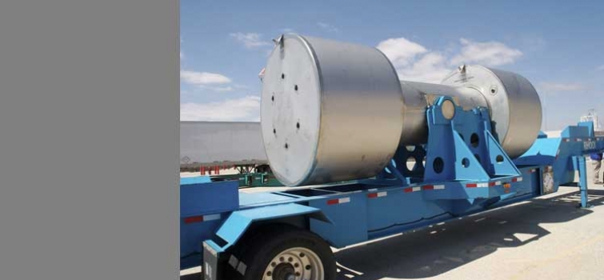
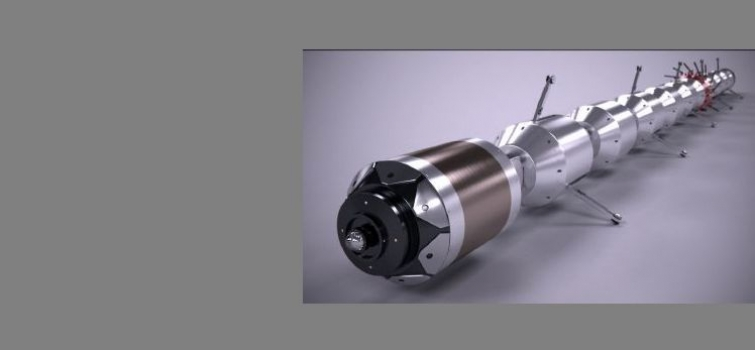
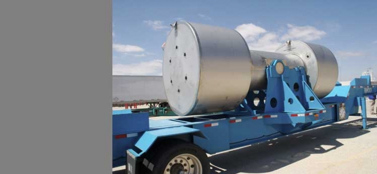

-

President Bush and Secretary Bodman participate in a demonstration of alternative fuel vehicles (AFVs) on the South Lawn of the White House.
- 
The Department's Waste Isolation Pilot Plant (WIPP) near Carlsbad, New Mexico, receives (pdf) its first shipment of remote-handled (RH) transuranic (TRU) radioactive waste.
- 
The Department's National Energy Technology Laboratory announces the development of a new robotic pipeline inspection tool that could revolutionize the pipeline inspection process.
- 
Return to Timeline of Events: 2006
Continue to Timeline of Events: 2008
Jump to month: February | March | April | May | June | July | August | September | October | November | December
January 4, 2007
Secretary of Energy Samuel Bodman announces the resignation of Linton Brooks, Administrator of DOE's National Nuclear Security Administration (NNSA). "During my tenure," the Secretary says, "there have been a number of management issues involving the National Nuclear Security Administration, the most recent of which was a serious security breach several months ago at the Los Alamos National Laboratory. These management and security issues can have serious implications for the security of the United States." The Secretary notes that while "the current NNSA management has done its best to address these concerns, I do not believe that progress in correcting these issues has been adequate." The Secretary states that "I have decided that it is time for new leadership at the NNSA, and I have asked for the resignation of NNSA Administrator, Linton Brooks."
January 4, 2007
The Department announces that a Notice of Intent (NOI) to prepare a Programmatic Environmental Impact Statement for President Bush's Global Nuclear Energy Partnership (GNEP) Initiative is posted in the Federal Register. The NOI outlines the programmatic and project-specific proposals of GNEP. GNEP will recycle spent nuclear fuel and destroy its long-lived radioactive components. To accomplish this, DOE proposes to design, build, and operate three facilities: 1) a nuclear fuel recycling center, which would separate spent nuclear fuel into reusable and waste components and then manufacture new nuclear fast reactor fuel using the reusable components; 2) an advanced recycling reactor, which would destroy long-lived radioactive elements in the new fuel while generating electricity; 3) an advanced fuel cycle research facility, which would perform research and development into spent nuclear fuel recycling processes and other advanced nuclear fuel cycles. DOE will consider 13 sites as possible locations for one or more of the proposed GNEP facilities.
January 4, 2007
The Democrat-controlled 110th Congress opens with lawmakers introducing a number of energy-related bills.
January 4, 2007
The Department's Ames Laboratory announces that researchers have developed a material with a negative refractive index for visible light. The silver-based, mesh-like material marks the latest advance in the rapidly evolving field of metamaterials that could lead to a wide range of new applications as varied as ultrahigh-resolution imaging systems and cloaking devices. Metamaterials, also known as left-handed materials, are exotic, artificially created materials that provide optical properties not found in natural materials. They have been heralded as the first step in creating an invisibility cloak.
January 5, 2007
President Bush designates Thomas D'Agostino to be Acting Under Secretary for Nuclear Security of DOE's National Nuclear Security Administration (NNSA). D'Agostino currently serves as Deputy Administrator for Defense Programs at NNSA.
January 8, 2007
The Department's Office of Science announces that 45 projects were awarded a total of 95 million hours of computing time on some of the world's most powerful supercomputers located at DOE facilities as part of its 2007 Innovative and Novel Computational Impact on Theory and Experiment (INCITE) program. The supercomputers will allow cutting-edge research and design of virtual prototypes to be carried out in weeks or months, rather than the years or decades that would be needed using conventional computing systems. Launched in 2003, the INCITE mission is to advance American science and industrial competitiveness. The projects, with applications from aeronautics to astrophysics, consumer products to combustion research, were competitively chosen based on the potential impact of the science and engineering research and the suitability of the project for use of supercomputers. Practical applications of the research include designing quieter cars, improving commercial aircraft design, advancing fusion energy, studying supernovas, understanding nanomaterials, and studying global climate change and the causes of Parkinson's disease.
January 8, 2007
The Department's Fermi National Accelerator Laboratory announces that scientists of the Collider Detector at Fermilab (CDF) collaboration have made the world's most precise measurement by a single experiment of the mass of the W boson, the carrier of the weak nuclear force and a key parameter of the Standard Model of particles and forces. The new W-mass value leads to an estimate for the mass of the yet-undiscovered Higgs boson that is lighter than previously predict.
January 9, 2007
Secretary Bodman and Akira Amari, Minister of Economy, Trade and Industry of Japan, meet in Washington to review current and prospective cooperative activities in the energy field. Topics of discussion include diversifying the energy mix, specifically focusing on nuclear power but also including clean coal efforts, information exchange on methane hydrates, and renewable energy as key alternatives to traditional fossil fuels. Other topics of discussion include improving energy efficiency, improving investment climate in energy producing countries, and engaging emerging economies, particularly China and India, as crucial for ensuring global energy security.
January 10, 2007
The European Union proposes a new energy policy that will reduce energy consumption by 20 percent and greenhouse gas emissions by at least 20 percent by 2020.
January 10, 2007
The Department releases the Global Nuclear Energy Partnership (GNEP) Strategic Plan (pdf), which details the initiative's purpose, principles, and implementation strategy. The Plan outlines a path forward to enable worldwide increase in the use of safe, emissions-free nuclear energy without contributing to the spread of nuclear weapons capabilities in a manner that responsibly addresses the waste produced. The Strategic Plan provides a framework to expand nuclear power to meet growing energy demand; develop, demonstrate, and deploy advanced technologies for recycling spent nuclear fuel without separating plutonium; develop, demonstrate, and deploy advance reactors that consume transuranics; establish reliable fuel services worldwide; develop, demonstrate, and deploy proliferation resistant reactors appropriate to power grids and; and develop enhanced safeguards to ensure nuclear energy systems are used for peaceful purposes.
January 10, 2007
The Department's Office of Fossil Energy announces that a DOE-funded project has successfully demonstrated the viability of a new low-cost, low-impact technology to develop the nation's oil shale resources. The project, conducted by Composite Technology Development Inc. and managed by DOE's National Energy Technology Laboratory, involves the heating of oil shale in situ, several thousand feet below the surface, separating the kerogen without mining the oil shale rock. The petroleum-like liquid is rendered mobile enough to be pumped to the surface. If ongoing research continues to confirm the technology's effectiveness, its application offers the potential to dramatically reduce costs and environmental impacts in the extraction of oil from oil shale. The U.S. holds more than three-fourths of the world's estimated 2.6 trillion barrels of oil-in-place of oil shale resources. As much as 1.1 trillion barrels of oil equivalent is believed to be recoverable in the richest single deposit-the Green River formation of Colorado, Utah, and Wyoming. That volume is almost 50 percent greater than the combined proved reserves of conventional oil in the entire Middle East.
January 11, 2007
The Department's Lawrence Berkeley National Laboratory announces that researchers have demonstrated that inhibiting the activity of the protease enzyme known as TACE can deprive tumor cells of a key factor needed for their proliferation. TACE is strongly present in one of the deadliest forms of breast cancer that responds poorly to current therapies. As a result, the active ingredient in a drug currently being tested to treat rheumatoid arthritis could serve as an effective means of treatment.
January 12, 2007
Secretary Bodman announces that he and Russian Federal Atomic Energy Agency Director Sergey Kiriyenko have submitted to Presidents Bush and Putin the fourth report of the Senior Interagency Working Group on implementation of the February 2005 Bratislava Checklist. The report highlights progress over the past six months, including a U.S. and Russian collaborative radiological source search/consequence management exercise and the completion of cooperative material protection, control and accounting system upgrades at several Russian nuclear sites, as well as the return of more than 590 pounds of highly enriched uranium from a former East German civilian nuclear facility to Russia (see December 18, 2006, entry).
January 18, 2007
Crude oil prices drop to $50.48 a barrel, the lowest price since May 2005. Oil is down over a third from its high of $77.03 on July 14, 2006.
January 18, 2007
Secretary Bodman issues a statement commending the House for passage of H.R.6: Creating Long-Term Energy Alternatives for The Nation Act. The bill seeks to reduce U.S. dependency on foreign oil by investing in clean, renewable, and alternative energy resources, promoting new emerging energy technologies, developing greater efficiency, and creating a Strategic Energy Efficiency and Renewables Reserve to invest in alternative energy, and for other purposes. Noting the Department's "areas of agreement" with the proposed legislation, the Secretary also cites "areas of disagreement" and suggests changes to improve the bill.
January 19, 2007
Secretary Bodman certifies that environmental cleanup is complete at three former weapons research and production facilities in Ohio: the Fernald Closure site in Crosby Township, the Columbus Closure site at the Battelle Memorial Institute, and the Ashtabula Closure Project at the Reactive Metal Inc. As part of the cleanup and restoration effort, workers safely demolished hundreds of contaminated buildings, treated and disposed of millions of tons of waste, and performed extensive soil and groundwater remediation. "Today we honor the rich past of these sites that played a critical role in the Cold War and celebrate the efforts to restore their environmental health," the Secretary declares at the closure ceremony. "The Department of Energy has cleaned up over 1,100 acres in Ohio and, due to the many lessons learned at these sites, we are on track to safely clean up five additional sites across the nation in the next two years." DOE will return 31 acres at the Columbus site to Battelle Memorial Institute and 42 acres at the Ashtabula site to Reactive Metals Incorporated for unrestricted industrial reuse. At Fernald, DOE will manage the long term protection of the 1,050 acre site as an undeveloped nature and wildlife reserve through monitoring and sampling of the 180 wells and groundwater. In addition, DOE will operate a Groundwater Treatment Facility to safely pump and treat water to the Great Miami Aquifer. DOE will open an education center at Fernald that will offer members of the community and visitors a place to learn about the history of the site.
January 19, 2007
The Department's Office of Electricity Delivery and Energy Reliability releases a study by the Pacific Northwest National Laboratory on Plug-in Hybrid Electric Vehicles that finds there is enough electric capacity to power plug-in vehicles across much of the nation. "Off-peak" electricity production and transmission capacity could fuel 84 percent of the 198 million cars, pickup trucks, and sport utility vehicles in the nation if they were plug-in hybrid electrics.
January 19, 2007
The General Accountability Office (GAO) releases a report (pdf) on DOE's energy research and development efforts. The GAO finds that "DOE's total budget authority for energy R&D dropped by over 85 percent (in real terms) from 1978 to 2005, peaking in the late 1970s but falling sharply when oil prices returned to lower levels in the mid-1980s." This has resulted in a more narrowed R&D focus, and "the government has relied on the market to determine whether to deploy advanced energy technologies." The market, however, "has been slow to embrace advanced energy technologies because they typically are not economically competitive with conventional energy sources such as oil, natural gas, and coal. In part this is because the prices U.S. consumers pay for conventional energy do not reflect their true costs, including the costs of certain adverse environmental impacts." The GAO concludes that it is "unlikely that DOE's current level of R&D funding or the nation's current energy policies will be sufficient to deploy alternative energy sources in the next 25 years that will reverse our growing dependence on imported oil or the adverse environmental effects of using conventional fossil energy."
January 21, 2007
Raymond L. Orbach, DOE's Under Secretary for Science, signs an agreement with Lynne Brindley, Chief Executive, the British Library, to partner on the development of a global science gateway. The gateway would eventually make science information resources of many nations accessible via a single Internet portal. Dubbed "Science.world," the planned resource would be available to scientists in all nations and to anyone interested in science. The approach will capitalize on existing technology to search vast collections of science information distributed around the globe, enabling much-needed access to smaller, less well-known sources of highly valuable science. Following the model of Science.gov, the U.S. interagency science portal that relies on content published by each participating agency, "Science.world" will rely on scientific resources published by each participating nation. Other countries have been invited to participate in this international effort.
January 22, 2007
An 18-member assessment panel commissioned by DOE releases its report on The Future of Geothermal Energy. The panel concludes that "with a combined public/private investment of about $800 million to $1 billion over a 15 year period, EGS [Enhanced Geothermal Systems] technology could be deployed commercially on a timescale that would produce more than 100,000 MW or 100 GW of new capacity by 2050." With a "reasonable investment in R&D and a proactive level of deployment in the next 10 years, the panels notes, geothermal could be "a major player in supplying 10% of U.S. base-load electricity by 2050."
January 22, 2007
The U.S. Climate Action Partnership, a diverse group of U.S.-based businesses and leading environmental organizations, issues A Call for Action (pdf) urging the federal government to "quickly enact strong national legislation to achieve significant reductions of greenhouse gas emissions." The group says "any delay in action to control emissions increases the risk of unavoidable consequences that could necessitate even steeper reductions in the future."
January 23, 2007
President Bush, in his State of the Union address, asks Congress to join him in pursuing the "great goal" of reducing gasoline usage by 20 percent in the next 10 years. To reach the "20 in 10" goal, the President states, the supply of alternative fuels must be increased by setting a mandatory fuels standard requiring 35 billion gallons of renewable and alternative fuels in 2017, and fuel economy standards for cars must be reformed and modernized resulting in the conservation of up to 8.5 billion more gallons of gasoline by 2017. The President also notes that the way to move forward in diversifying America's energy supply is through technology, and he calls for changing the way America generates electric power by greater use of clean coal technology, solar and wind energy, and clean, safe nuclear power. "America is on the verge of technological breakthroughs that will enable us to live our lives less dependent on oil," the President says. "And these technologies will help us be better stewards of the environment, and they will help us to confront the serious challenge of global climate change." He also asks Congress to double the current capacity of the Strategic Petroleum Reserve.
January 23, 2007
Secretary Bodman declares that expanding the Strategic Petroleum Reserve is a "wise and prudent policy decision." The SPR currently holds about 691 million barrels of crude oil, which is the approximate equivalent of 55 days of net imports. Expanding the SPR to 1.5 billion barrels would result in an approximately 97 day supply of net import protection. The Secretary tells reporters that he expects DOE to begin purchasing crude oil in the spring at a rate of about 100,000 barrels per day.
January 23, 2007
The Department announces that it intends to issue $17 million in solicitations to improve automobile efficiency. The funding will be offered as two separate solicitations, one for $14 million to support plug-in hybrid electric vehicle technology and another for $3 million for research to improve E-85 engine efficiency.
January 23, 2007
The Department's Waste Isolation Pilot Plant (WIPP) near Carlsbad, New Mexico, receives (pdf) its first shipment of remote-handled (RH) transuranic (TRU) radioactive waste. The waste, which consisted of three 30-gallon drums of radioactive debris waste and originated at DOE's Idaho National Laboratory, was transported inside a shielded RH-72B shipping cask, providing the same low radiation levels as the contact-handled (CH) TRU wastes that have been shipped to WIPP since 1999. "This first shipment of RH-TRU waste is particularly significant to DOE," notes DOE Assistant Secretary for Environmental Management James Rispoli. "WIPP is now positioned to complete its entire mission. The safe, efficient disposal of all transuranic waste, including remote-handled material, is vital to our national clean-up strategy."
January 24, 2007
President Bush issues Executive Order 13423, Strengthening Federal Environmental, Energy, and Transportation Management. The order sets out policy, goals, and responsibilities for conducting these federal activities in "an environmentally, economically and fiscally sound, integrated, continuously improving, efficient, and sustainable manner."
January 24, 2007
President Bush, in a speech at Hotel du Pont in Wilmington, Delaware, discusses the administration's energy initiative and the focus on new technologies. "We can get beyond the pre-Kyoto era with a post-Kyoto strategy," the President notes, "the center of which is new technologies."
January 24, 2007
Secretary Bodman participates in Ask the White House, an online interactive forum, highlighting President Bush's "20 in 10" initiative and responding to questions about greenhouse gases, nuclear waste, clean coal, alternate energy sources, ethanol, oil prices, and the Strategic Petroleum Reserve.
January 24, 2007
Secretary Bodman, in an interview on CNBC-TV, says that filling the Strategic Petroleum Reserve to 1.5 billion barrels could take over 20 years. He notes it would be likely 10 to 12 years before the 1 billion barrels level is reached. The Secretary adds that studies would be done to determine if some of the oil should be stored on the East Coast or in California.
January 24, 2007
The U.S. Court of Appeals for the 9th Circuit rules (pdf) that DOE's Bonneville Power Administration (BPA), in transferring functions critical to salmon and steelhead survival from the Fish Passage Center to the Pacific States Marine Fisheries Commission and DOE's Battelle Pacific Northwest National Laboratory per language inserted by Senator Larry Craig (R-ID) in the committee report accompanying the appropriations bill, "acted contrary to law in concluding that the congressional committee report language carried the force of law." The court orders BPA to honor its contractual agreement with the Fish Passage Center.
January 25, 2007
The Department's Lawrence Berkeley National Laboratory announces that researchers at the lab and at the Department's Argonne National Laboratory have taken an important step in the development of hydrogen fuel cells for vehicle by identifying a new variation of a familiar platinum-nickel alloy that is far and away the most active oxygen-reducing catalyst ever reported. The slow rate of oxygen-reduction catalysis on the cathode-a fuel cell's positively charged electrode-has been a primary factor hindering development of the polymer electrolyte membrane fuel cells favored for use in vehicles powered by hydrogen.
January 26, 2007
Secretary Bodman, speaking on a panel at the World Economic Forum annual meeting in Davos, Switzerland, states that "taxing gasoline at an increased level" would be a "highly divisive matter." He notes that "people in New York view the taxation of gasoline as one thing. People in Texas, Wyoming, in areas where you have to commute very long distances, view the taxation in a very different matter."
January 27, 2007
President Bush discusses his energy initiatives during his weekly radio address.
January 29, 2007
The Nuclear Regulatory Commission approves a final rule that enhances security at nuclear power plants. The rule does not require protection against a deliberate hit by a large aircraft, as proposed in 2004 in a Petition for Rulemaking by the Committee to Bridge the Gap.
January 31, 2007
Secretary Bodman testifies before the House Subcommittee on Strategic Forces of the Committee on Armed Services on DOE's progress in implementing Title 32 - the National Nuclear Security Administration Act. The Secretary states that "the creation of NNSA as a separately organized entity within the Department has not yielded all the beneficial results that the legislation's authors intended." The act "imposes severe limitations on the Secretary of Energy's management authority, and in my view, impedes the Secretary's ability to manage the organization effectively." The Secretary questions "whether the arm's length management model prescribed by the Act is a workable and effective management tool."
Top of page
February 1, 2007
Global energy firm BP announces that it has selected the University of California, Berkeley, in partnership with DOE's Lawrence Berkeley National Laboratory (LBNL) and the University of Illinois at Urbana-Champaign, to lead a $500 million research effort to develop new sources of energy and reduce the impact of energy consumption on the environment. The funding will create the Energy Biosciences Institute, which initially will focus its research on biotechnology to produce biofuels-turning plants and plant materials, including corn, field waste, switchgrass and algae, into transportation fuels. The facility will reside on the LBNL campus.
February 2, 2007
The Intergovernmental Panel on Climate Change (IPCC) releases its Fourth Assessment Report. The IPCC concludes (pdf) that "warming of the climate system is unequivocal, as is now evident from observations of increases in global average air and ocean temperatures, widespread melting of snow and ice and rising global average sea level." The IPCC states that "most of the observed increase in global average temperatures since the mid-20th century is very likely due to the observed increase in anthropogenic GHG [greenhouse gas] concentrations." The IPCC released its Third Assessment Report in 2001.
February 2, 2007
Secretary Bodman, Environmental Protection Agency Administrator Stephen Johnson, and National Oceanic and Atmospheric Administration Administrator Conrad Lautenbacher hold a "media availability" to discuss Working Group I's contribution to the IPCC's Fourth Assessment Report, The Physical Science Basis for Climate Change. "The Administration welcomes the Intergovernmental Panel on Climate Change report, which was developed through thousands of hours of research by leading U.S. and international scientists and informed by significant U.S. investments in advancing climate science research," the Secretary notes. "Human activity is contributing to changes in our Earth's climate, and that issue is no longer up for debate." The Secretary states that the administration opposes mandatory curbs on fossil fuels use. "A carbon cap in this country may lead to the transfer of jobs and industries abroad that do not have such a carbon cap," he observes, "and that you would then have the U.S. economy damaged on the one hand, and the same emissions-in fact, potentially even worse emissions, because in many of these countries they don't have the kind of standards." DOE issues a press release stating that the report "confirms what President Bush has said about the nature of climate change and it reaffirms the need for continued U.S. leadership in addressing global climate issues. The report findings highlight the need for robust climate research and the development of new technologies to clean our air and deal with global climate change, while maintaining economic competitiveness."
February 2, 2007
The Department's National Nuclear Security Administration (NNSA) releases a report (pdf) further outlining its "Complex 2030" plans to modernize the nation's aging, Cold War-era nuclear weapons complex. Required by the 2007 National Defense Authorization Act and developed in consultation with the Office of the Secretary of Defense and the Nuclear Weapons Council, the report says that the complex's total square footage and the number of employees funded by NNSA's nuclear weapons accounts could each be reduced by as much as one-third in the future. The report also notes that it is NNSA's goal to carry out Complex 2030 within existing funding levels and program structures. According to the report, NNSA will analyze four different alternatives in its ongoing environmental assessment of Complex 2030, which are: a "No Action Alternative" to analyze the impact of no infrastructure changes; a "Distributed Centers of Excellence Transformation Alternative" to analyze the transformation of the complex to one that is smaller, more efficient, and more responsive; a "Consolidated Nuclear Production Center Transformation Alternative" to analyze a single facility for all nuclear weapon's research, development, and production activities; and a "Capability-Based Alternative" to analyze reducing the production facilities to nominal levels.
February 2, 2007
The Department announces it will award $5.7 million to nine universities for research grants under the Nuclear Energy Research Initiative. These grants are designed to engage U.S. university professors and students in advanced nuclear energy research and development, in an effort to strengthen and focus DOE's research for the Generation IV Nuclear Energy Systems Initiative and the Nuclear Hydrogen Initiative.
February 5, 2007
Secretary Bodman announces President Bush's $24.3 billion budget request for DOE for Fiscal Year 2008. At $24.3 billion, the Department's FY 2008 budget request is $706 million more than the FY 2007 request. Of DOE's four "business lines," the National Nuclear Security Administration is $9.387 billion, a $71 million or .8 percent increase above the FY 2007 request; for energy activities, the FY 2008 budget request at $3.089 billion is up $506 million or 19.6 percent compared to the FY 2007 request; funding for the Office of Science is $4.398 billion, up $296 million or 7.2 percent; environment programs are $6.344 billion, down $230 million or 3.5 percent. Fossil energy at $863 million is up 33.0 percent from the FY 2007 request while nuclear energy at $875 million is up 38.2 percent. "Under President Bush's leadership, this budget builds on our commitment to strengthen our nation's energy security by diversifying our energy resources and reducing our reliance on foreign sources of energy," the Secretary notes. "In addition, this budget will help us expand our nation's scientific know-how, protect generations from the dangers of our Cold War legacy, and safely and reliably maintain our nation's nuclear weapons stockpile."
February 27, 2007
The Department's Savannah River Site (SRS) completes the startup of the Tritium Extraction Facility and safely makes the first transfer of new tritium gas to the nation's tritium inventory. Since SRS's tritium production reactors were shut down in 1988, the U.S. has used tritium recycling operations to keep the nation's nuclear weapons arsenal viable. As weapons were retired from the stockpile, their tritium gas was recovered and recycled for use in refurbished weapons. Because tritium has a half-life of only 12.3 years, this practice provided only a short term solution. NNSA newsletter, 1/07, p6 Shipping container with irradiated Tritium Producing Burnable Absorber Rods (TPBARs) being loaded into the Tritium Extraction Facility at DOE's Savannah River Site.
February 7, 2007
Secretary Bodman names eight winners of the Ernest Orlando Lawrence Award. The Lawrence Award honors scientists and engineers at mid-career for exceptional contributions in research and development that support DOE and its mission to advance the national, economic, and energy security of the U.S. The award consists of a gold medal, a citation, and an honorarium of $50,000.
February 7, 2007
Secretary Bodman testifies before the Senate Committee on Energy and Natural Resources on DOE's Fiscal Year 2008 budget request. Before discussing the details of the budget proposal, the Secretary promotes the Bush Administration's "20 in 10" plan, which seeks to reduce U.S. gasoline consumption by 20 percent in the next ten years.
February 7, 2007
The Department's Sandia National Laboratories announces the development of a new wind turbine blade design promising to be more efficient than current designs. Named "STAR" for Sweep Twist Adaptive Rotor, the blade is the first of its kind produced at a utility-grade size. Its most distinctive characteristic is a gently curved tip, termed "sweep," which unlike the vast majority of blades in current use, is specially designed for low-wind-speed regions like the Midwest. The sites targeted by this effort have annual average wind speeds of 5.8 meters per second, measured at 10-meter height. Such sites are abundant in the U.S. and would increase by 20-fold the available land area that can be economically developed for wind energy.
February 8, 2007
The Department's Office of Environmental Management approves for public release Energy Demands on Water Resources (pdf), a report prepared for Congress analyzing the interdependency of energy and water and focusing on threats to national energy production resulting from limited water supplies. A multi-laboratory Energy-Water Nexus Committee team produced the report.
February 9, 2007
The U.S. signs a Declaration of Principles with the government of Panama to help prevent smuggling of nuclear and other radioactive material. The Department's National Nuclear Security Administration (NNSA) and the Department of Homeland Security's Customs and Border Protection (CBP) cosigned the declaration. The document covers implementation of NNSA's Megaports Initiative and CBP's Container Security Initiative, as both programs continue working together to stop nuclear material from being smuggled to U.S. ports.
February 13, 2007
The U.S., China, Russia, Japan, and South Korea reach agreement with North Korea on first steps toward North Korea's nuclear disarmament.
February 13, 2007
The Department's Idaho National Laboratory (INL) announces that Nexia Solutions, the organization that will form the foundation of the National Nuclear Laboratory for the United Kingdom, has signed a ground breaking Memorandum of Understanding (MOU) with INL. The MOU will see the UK and U.S. pool resources and expertise to benefit both countries as well as global nuclear initiatives such as the Global Nuclear Energy Partnership. INL is DOE's lead nuclear technology research, development and demonstration national laboratory.
February 14, 2007
Secretary Bodman, in a speech before the CERA energy conference in Houston, discusses energy security as an economic and national security issue. He says that "initiatives, new or old which seek to control the flow of energy supplies to the market and circumvent the role of the market to set prices are contrary to the long term interests of both producers and consumers." The Secretary's remarks follow on Russian President Vladimir Putin's visit to the Middle East where he discussed forming an international natural gas cartel. After his speech, the Secretary notes that "all countries can act as they see fit, but I think it's fair to say that efforts to manipulate markets, trying to organize the suppliers in such a fashion, over the long term is not going to accrue to the benefit of suppliers."
February 14, 2007
Secretary Bodman announces that Richton, Mississippi, will be the site for the expansion of the Strategic Petroleum Reserve (SPR). "The Strategic Petroleum Reserve is a national asset intended to protect the U.S. against severe supply disruptions that could harm our economy and threaten our national security," says the Secretary. "Today's designation of Richton, MS, as the home of the fifth site of our nation's Strategic Petroleum Reserve will make America stronger, and make her a more secure and prosperous nation." The other four SPR sites, two in Louisiana and two in Texas, are situated along the Gulf coast. As an inland site, Richton will have less vulnerability to hurricane impacts and will be connected by pipeline to the Capline pipeline system and to refiners and marine facilities in Pascagoula for oil distribution. Adding to the current Reserve will happen in stages over the next two decades to coincide with the construction and expansion of DOE's facilities. The Department's goal is to have the expansion completed by 2027.
February 15, 2007
President Bush signs the Continuing Resolution providing Fiscal Year 2007 appropriations through September 30, 2007. Most programs are funded at FY 2006 levels with increases to cover the cost of pay increases. The Department's Office of Science funding is increased by $200 million to support research including new energy technologies such as improved conversion of cellulosic biomass to biofuels, and the Energy Efficiency and Renewable Energy program funding is increased by $300 million to accelerate research and development activities. The resolution does not contain earmarks and gives agency heads, including Secretary Bodman, options to allocate funds that would have otherwise been spent on such activities. The resolution directs officials to report to House and Senate Appropriations panels within 30 days.
February 20, 2007
The Department's Idaho National Laboratory (INL) participates in a ground breaking ceremony for the 55,000-square-foot building in Idaho Falls that will house the Center for Advanced Energy Studies (CAES), a public/private partnership among Boise State University, Idaho State University, University of Idaho, and INL. CAES will address critical energy science and engineering issues.
February 22, 2007
President Bush, in an "energy event" to highlight the "20 in 10" initiative announced in the State of the Union address, tours the Novozymes North America, Inc., facility in Franklinton, North Carolina. The facility-the largest multi-purpose enzyme manufacturing plant in the U.S.-produces enzymes that are used in ethanol plants to break down the starch in corn and make ethanol. The President also participates in a panel discussion with officials and scientists from Novozymes, academia, the ethanol industry, and DOE's National Renewable Energy Laboratory. Ethanol enzyme research at the Franklinton plant is funded by DOE.
February 22, 2007
The Defense Threat Reduction Agency (DTRA) cancels the Divine Strake experiment to be held at DOE's Nevada Test Site. The experiment involved detonating 700 tons of conventional explosives as part of a study on targeting underground weapons facilities or bunkers.
February 23, 2007
President Bush and Secretary Bodman participate in a demonstration of alternative fuel vehicles (AFVs) on the South Lawn of the White House. "I firmly believe that the goal I laid out, that Americans will use 20 percent less gasoline over the next 10 years, is going to be achieved, and here's living proof of how we're going to get there," notes the President. After taking part in the demonstration, Secretary Bodman hosts Ask the White House, an online interactive forum, and responds to questions on U.S. energy policy.
February 26, 2007
Secretary Bodman sends legislation (pdf) to Congress requesting authorization to speed up the process of establishing energy efficiency standards and thus bring more efficient products to market sooner. The proposed legislation requests authority to use a more streamlined rulemaking process for certain products when a clear consensus for a standard exists. DOE would be able to prescribe energy efficiency standards by direct final rule when all relevant interests-manufacturers, stakeholders, and state governments-jointly negotiate and submit an agreed proposed standard. Under the Energy Policy and Conservation Act (EPCA) of 1975, DOE is required to set energy conservation standards for certain residential and commercial appliances and equipment. EPACT 2005 amended EPCA to add additional residential and commercial appliances and equipment to the existing program. The proposed legislation applies to all of the EPCA products, including those added by EPACT 2005.
February 26, 2007
The Department's National Nuclear Security Administration (NNSA) notifies the University of California of multiple nuclear safety violations that occurred at the Los Alamos National Laboratory in New Mexico. The University of California was the contractor responsible for managing and operating the laboratory when the violations occurred in 2005. The Preliminary Notice of Violation (PNOV) cites multiple violations of the Department's nuclear safety requirements associated with operational events and performance deficiencies at the laboratory. Due to the University's statutory exemption from such penalties at the time of the violations, no civil penalties were issued in this PNOV. However, had the exemption not been in place, DOE would have issued a fine of $1.1 million based on the number and severity of violations and this would have been the single largest civil penalty in the history of the enforcement program. The Price-Anderson Amendments Act of 1988 authorizes DOE to undertake regulatory actions against contractors for violations of its nuclear safety requirements.
February 28, 2007
Secretary Bodman announces that DOE will invest up to $385 million for six biorefinery projects over the next four years. When fully operational, the biorefineries are expected to produce more than 130 million gallons of cellulosic ethanol per year. Combined with the industry cost share, more than $1.2 billion will be invested in the six biorefineries. The goal is to make cellulosic ethanol cost-competitive with gasoline by 2012. "These biorefineries will play a critical role in helping to bring cellulosic ethanol to market, and teaching us how we can produce it in a more cost effective manner," the Secretary says. "Ultimately, success in producing inexpensive cellulosic ethanol could be a key to eliminating our nation's addiction to oil. By relying on American ingenuity and on American farmers for fuel, we will enhance our nation's energy and economic security."
Top of page
March 2, 2007
The Department announces the completion of Energy Savings Assessments (ESAs) at 200 of the nation's largest industrial facilities, identifying opportunities to save over 50 trillion Btus of natural gas-roughly equivalent to the natural gas used in 700,000 American homes. In 2007, DOE plans to conduct 250 additional ESAs and offer cost-sharing options with industry, utilities, and other partners.
March 2, 2007
The Department's National Nuclear Security Administration (NNSA) announces that the Nuclear Weapons Council approved a design for a joint NNSA and U.S. Navy program to provide a replacement warhead for a portion of the nation's sea-based nuclear weapons that will provide means to ensure long-term confidence in a more secure, smaller and safer nuclear weapons stockpile. The design team from NNSA's Lawrence Livermore and Sandia National Laboratories was selected to develop the Reliable Replacement Warhead. NNSA and the national laboratories have determined that this design can be certified without requiring underground nuclear testing. NNSA and the Navy will now work together to develop a detailed RRW project plan and cost estimate for developing and producing the system. This work will support a future decision to seek congressional authorization and funding in order to proceed into system development and subsequent production.
March 2, 2007
The Department's Bonneville Power Administration (BPA) announces that it estimates Pacific Northwest electricity ratepayers could pay $400 million to $550 million a year to replace the power capabilities of four lower Snake River dams if those dams were removed. The estimates are provided in response to a report released in November 2006 by environmental and sport fishing groups stating that ratepayers and taxpayers would be economically better off without the lower Snake River dams over a 10-year period. "These dams produce enough electricity to supply a city about the size of Seattle at a very low cost," says Steve Wright, BPA administrator. "Their output cannot be replaced easily or inexpensively."
March 5, 2007
The Department announces it will award $5.6 million over three years (Fiscal Years 2007-2009), subject to appropriate from Congress, to U.S. universities in 12 cooperative research projects, under the Nuclear Energy Research Initiative (NERI). These awards will further engage U.S. university professors and their students in advanced nuclear fuel cycle research and development (R&D) supporting the Global Nuclear Energy Partnership (GNEP).
March 6, 2007
The Department announces that its Loan Guarantee Office has received 143 pre-applications requesting more than $27 billion in loan guarantee protection as of the December 31, 2006, submission deadline. The Energy Policy Act of 2005 authorizes DOE to issue loan guarantees to eligible projects that "avoid, reduce, or sequester air pollutants or anthropogenic emissions of greenhouse gases" and "employ new or significantly improved technologies as compared to technologies in service in the United States at the time the guarantee is issued." The pre-applications, representing project costs of more than $51 billion, were submitted in response to a DOE solicitation issued in August 2006. The full-year Continuing Resolution enacted into law on February 15, 2007, provided DOE with $7 million to fund the operation of its Loan Guarantee Office and authority to issue guarantees for up to $4 billion in loans. "This demonstrates a great desire from industry to get federal loan guarantees in place to spur innovative and novel technologies that lead to clean energy," Secretary Bodman notes.
March 6, 2007
Secretary Bodman announces he will send to Congress a legislative proposal to facilitate the licensing and construction of the geologic repository and lead to the safe, permanent disposal of spent nuclear fuel and high-level radioactive waste deep within the mountain. Among the various provisions, the proposed legislation would withdraw, permanently from public use, the land at and surrounding the Yucca Mountain repository site in Nevada and would facilitate Congress's ability to provide adequate funding for the Yucca Mountain Project. The proposed legislation would also eliminate the current statutory 70,000 metric ton cap on disposal capacity at Yucca Mountain, in order to allow maximum use of the mountain's true technical capacity.
March 8, 2007
The Nuclear Regulatory Commission (NRC) approves the first-ever Early Site Permit for the Exelon Generation Company's Clinton nuclear plant site in central Illinois. It is the first nuclear power reactor site approval in over 30 years. "NRC approval of the Clinton Early Site Permit represents a major accomplishment in this Administration's effort to address the barriers and stimulate deployment of new nuclear power plants in the United States," Secretary Bodman says in a statement commending NRC's decision. "By demonstrating effectiveness and predictability in the licensing process, utilities will have the information they need to make sound business decisions that can lead to the construction of new nuclear power plants."
March 8, 2007
Secretary Bodman announces the selection of 13 industry-led solar technology development projects for negotiation for up to $168 million in Fiscal Year 2007-09 funding, subject to appropriation from Congress. As part of the cost-shared agreements, the industry-led teams will contribute more than 50 percent of the funding for these projects for a total value of up to $357 million over three years. These cooperative agreements, to be negotiated, will be the first made available as part of President Bush's Solar America Initiative, a component of his Advanced Energy Initiative.
March 8, 2007
The House creates a Select Committee on Energy Independence and Global Warming. The committee will "investigate, study, make findings, and make recommendations" on ways to cut oil imports and "achieve substantial and permanent reductions in emissions and other activities that contribute to climate change and global warming." The committee terminates at the end of 2008 and does not have legislative authority.
March 8, 2007
A small-but-smart satellite experiment, the Cibola Flight Experiment (CFE) developed at Los Alamos National Laboratory for the DOE's National Nuclear Security Administration, is launched aboard a United Launch Alliance Atlas-5 rocket and successfully placed in orbit 350 miles above Earth. The satellite will test leading-edge technologies that will be incorporated into future generations of satellites that will monitor the globe for nuclear detonations. CFESat is flying eight new technologies for space-flight validation, including a supercomputer equipped with field-programmable gate arrays, a new power supply, inflatable antennas, deployable booms, new type of launch vehicle separation system and a high-density Lithium-Ion battery pack. As with the previous Los Alamos ALEXIS and FORTE satellite missions, Cibola will utilize a specialized ground tracking station located at Los Alamos, and all satellite operations and data analysis will be conducted from the site.
March 8, 2007
The Department announces the release of a draft Request for Proposals (RFP) for the competitive selection of a Liquid Waste contractor for the Savannah River Site. The primary facilities related to this procurement include liquid radioactive waste tank farms, the Defense Waste Processing Facility, the saltstone facility, and potential operation of the Salt Waste Processing Facility. The contract is expected to be approximately $3 billion over six years with an option for a two year extension.
March 9, 2007
President Bush and Brazilian President Luiz Inacio Lula da Silva tour an alternative fuels manufacturing plant in Sao Paulo. The two leaders discuss biofuel technology, with each giving a brief statement. "I'm very much in favor of promoting the technologies that will enable ethanol and biodiesel to remain competitive, and therefore, affordable to the people in our respective countries and around our neighborhoods," President Bush notes. "One of the things I like, as the President noted, is that a good ethanol policy and good alternative fuel policy actually leads to more jobs, not less." A memorandum of understanding to advance cooperation on biofuels is also signed.
March 9, 2007
The Department's National Nuclear Security Administration (NNSA) announces approval by the Office of Personnel Management of a proposed "pay banding" demonstration project for NNSA employees. Pay banding is the collapsing of the current 15 government pay grades into broader pay bands or groups, which give managers the ability to reward outstanding performance with extra pay.
March 9, 2007
The Department issues an Expression of Interest (EOI) seeking input from industry representatives on the safe disposition of approximately 15,300 tons of nickel scrap recovered from uranium enrichment process equipment at DOE's Oak Ridge, Tennessee, and Paducah, Kentucky, facilities. The EOI will assist in DOE's evaluation of restricted uses of its nickel material for controlled radiological applications. These restricted uses could include use in commercial nuclear power plants, DOE nuclear facilities, or by the U.S. Navy.
March 12, 2007
Deputy Secretary Clay Sell participates in the U.S.-Russia Energy Working Group with Russian co-chair Ivan Materov, Deputy Minister of Industry and Energy, discussing key energy cooperation between the nations. Russia is the first stop of a three-nation swing, which will also take the Deputy Secretary to Ukraine and Georgia, to promote global energy security and nuclear non-proliferation.
March 14, 2007
An interdisciplinary Massachusetts Institute of Technology faculty group, including several former high level DOE officials, releases a study on The Future of Coal: Options for a Carbon-Constrained World.
March 15, 2007
Deputy Secretary Clay Sell announces in Kyiv, Ukraine, that the U.S. will invest $14 million to provide 42 nuclear fuel assemblies to the South Ukraine Nuclear Power Plant under the U.S.-Ukraine Nuclear Fuel Qualification Project.
March 15, 2007
The Department in a final rule (pdf) published in the Federal Register finds that replacing 30 percent of gasoline consumption with alternative fuels will not be achieved until 2030. The Energy Policy Act of 1992 established a 30 percent goal to be achieved by 2010.
March 15, 2007
American Electric Power, a utility company, announces plans to begin capture of up to 100,000 tons of carbon dioxide a year at its coal-based Mountaineer Plant in West Virginia and to store it on site in a deep saline reservoir. The decision follows a three-phase, 10-year project on the site sponsored by DOE's National Energy Technology Laboratory. All three phases were supported by $7.2 million in DOE funding and $1.4 million in cost-shared funding from industry partners. This is the first commercial demonstration of carbon capture and geologic storage by a utility.
March 16, 2007
The Department announces-in partnership with the National Rural Electric Cooperative Association and Cooperative Research Network-the selection of the Associated Electric Cooperative, Inc. (AECI), of Springfield, Missouri, for the 2006 Wind Cooperative of the Year Award. The Award recognizes AECI for leadership, demonstrated success, and innovation in its wind power program. The cooperative has committed to 156 megawatts of wind power from three different projects in northwest Missouri. The projects are expected to be operational by the end of the year.
March 16, 2007
The Department submits its $23.598 billion spending plan to Congress for Fiscal Year 2007, a $45 million (0.2%) increase over the FY 2007 request, as a result of the FY 2007 Continuing Resolution. The Continuing Resolution, signed by President Bush on February 15, required that a spending plan be submitted to Congress within 30 days of enactment. The plan includes substantial increases for energy efficiency, renewable energy, and coal research and development over DOE's original FY 2007 spending request.
March 16, 2007
Deputy Secretary Clay Sell visits the National Radioactive Waste Repository in Mtskheta, Georgia, and meets with Georgian President Mikheil Saakashvili and other senior government and business leaders to address the importance of diversifying energy sources, increasing the use of energy efficient technologies, and further efforts to secure special nuclear materials.
March 16, 2007
The Department announces that it will seek solicitations to purchase up to four million barrels of crude oil for the Strategic Petroleum Reserve (SPR). This is the first of a series of solicitations planned to replace 11 million barrels of oil sold in the fall of 2005 after Hurricane Katrina disrupted refinery supplies. This would be the first direct purchase of crude oil for the reserve since 1994. The SPR will use the proceeds from the emergency sale totaling $584 million to complete the purchases. The SPR has a capacity of 727 million barrels and currently holds 689 million barrels in inventory.
March 16, 2007
Assistant Secretary for Energy Efficiency and Renewable Energy Andy Karsner highlights DOE's selection of 13 industry-led solar technology development projects for negotiation of up to $168 million (Fiscal Year 2007-2009), subject to appropriation from Congress. The solar projects serve as the centerpiece of the President's Solar America Initiative (SAI), which aims to make solar energy cost-competitive with conventional forms of electricity by 2015/
March 16, 2007
Ward Sproat, director of DOE's Office of Civilian Radioactive Waste Management, tells reporters that it will cost about $18.5 billion to build the Yucca Mountain nuclear waste repository in Nevada, open it in 2017, and operate it through 2023.
March 16, 2007
The Department's Lawrence Livermore National Laboratory announces that a researcher, in the first study to estimate how much global food production already has been affected by climate change, finds that warming temperatures since 1981 have caused annual losses of roughly $5 billion for the major cereal crops. From 1981-2002, fields of wheat, corn and barley throughout the world have produced a combined 40 million metric tons less per year because of increasing temperatures caused by human activities.
March 19, 2007
The Department's National Nuclear Security Administration (NNSA) announces that it has signed contracts with Vietnam to begin to convert a research reactor from highly enriched uranium to low enriched uranium and to secure nuclear and radiological materials. The announcement carries out a commitment made by both countries during President Bush's October 2006 trip to Vietnam.
March 19, 2007
Secretary Bodman submits draft legislation to Congress that would increase the authorized capacity of the Strategic Petroleum Reserve from 1 billion barrels to 1.5 billion barrels. The expansion "is crucial to minimize the effect of the disruption in the world oil supply," the Secretary notes in a letter to the chairmen and ranking members of the House and Senate energy committees. The Secretary and Environmental Protection Agency Administrator Stephen Johnson submit draft legislation to Congress to implement the 35-billion-gallon alternative fuels standard proposed by the President as part of his 20 in 10 initiative. Supplementing the current standard for ethanol and biodiesel, the bill would encourage production of coal- and natural gas-based fuels, as well as butanol, electricity, liquid hydrogen and methanol. Also as part of the 20 in 10 plan, the White House submits draft legislation that would give the Transportation Department authority to set Corporate Average Fuel Economy (CAFE) standards for cars.
March 20, 2007
Secretary Bodman delivers remarks in New Delhi to the Federation of Indian Chambers of Commerce and Industry on the U.S. and India's bilateral energy relationship highlighting joint efforts to ensure a peaceful, prosperous, and environmentally responsible energy future. The Secretary, on a three-day visit to India, also meets with U.S. business leaders and senior Indian officials, including Prime Minister Dr. Manmohan Singh. While in New Delhi, the Secretary will discuss the importance of critical investments in infrastructure and energy diversification, development and deployment of clean energy technologies, and an open and transparent investment climate.
March 20, 2007
President Bush discusses the administration's energy initiatives at the Ford Motor Company-Kansas City Assembly Plant in Claycomo, Missouri. "The best way to become less reliant on foreign sources of oil is to manufacture automobiles that will use either less gasoline, or different kinds of fuels," the President states. "The Ford plant, the GM plant [across the way], are producing automobiles that are the beginning, really, of helping this country develop a wise energy policy and a wise environmental policy. And so I appreciate the fact that we've seen hybrid technologies and the world's first hybrid SUV, ethanol-driven cars."
March 20, 2007
The Department's National Nuclear Security Administration, continuing its efforts to reduce the size of the U.S. nuclear weapons stockpile, announces that uranium components from two major nuclear weapons systems formerly deployed on U.S. Air Force missiles and aircraft have been dismantled at the Y-12 National Security Complex in Oak Ridge, Tennessee. Y-12 workers successfully dismantled the last remaining piece of the W56, a nuclear warhead associated with the Minuteman II Intercontinental Ballistic Missile, and also completed the dismantling of two modifications of the B61, a strategic nuclear bomb. Y-12 celebrates the completion of work on the Last Dismantled Unit (LDU) of the W56. The reentry vehicle for the W56 LDU was signed by Y-12 and NNSA employees.
March 21, 2007
The Department's Los Alamos National Laboratory sponsors "Unconventional Computation: Quo Vadis?", a conference gathering a multidisciplinary group of world-renowned scientists to look far into the future for the most promising ideas about what computers and computing may be like many decades from now.
March 21, 2007
The Department and the U.S. Environmental Protection Agency at an awards ceremony in Washington D.C., honor 85 businesses, groups, and government entities for their outstanding commitment to the ENERGY STAR® program. Organizations recognized have achieved major energy savings and/or are helping consumers save money while reducing energy needs and carbon emissions.
March 22, 2007
Secretary Bodman meets with Dr. Anil Kakodkar, Secretary of India's Department of Atomic Energy, in Mumbai to address the U.S.-India nuclear cooperation and highlight the countries' ongoing partnership to advance global energy security.
March 23, 2007
The Department issues a Request for Proposals (RFP) for the competitive selection of a management and operating (M&O) contractor for the Savannah River Site (SRS). The total value of the five-year contract is $4 billion. SRS is a key DOE Office of Environmental Management (EM) industrial complex located in South Carolina. The current EM focus at SRS is on the cleanup of legacy materials, facilities, and wastes left from the Cold War. The Savannah River National Laboratory, located on the site, is EM's corporate laboratory. DOE's National Nuclear Security Administration at SRS supports the DOE national security and non-proliferation programs. This M&O contract will not include management of SRS liquid waste programs, which is the subject of a separate procurement.
March 23, 2007
The Department announces that it will prepare a Supplemental Environmental Impact Statement (EIS) that identifies the plutonium vitrification facility and use of H-Canyon at DOE's Savannah River Site near Aiken, South Carolina, as the preferred alternatives for surplus plutonium not planned for conversion to mixed oxide fuel. DOE will evaluate stabilizing up to 13 metric tons of plutonium that are not planned for use through the Mixed Oxide Fuel Fabrication Facility (MOX).
March 26, 2007
President Bush participates in a demonstration of alternative fuel vehicles with the CEOs of Ford, General Motors and DaimlerChrysler the South Lawn of the White House. "I've just spent quite a while talking to our CEOs of American automobile companies," the President tells the press. "And I was interested in their take on my goal of reducing gasoline consumption by 20 percent over the next 10 years. I found it very interesting that by 2012, 50 percent of the automobiles in America will be flex-fuel vehicles. That means that the American consumer will be able to either use gasoline or ethanol, depending upon, obviously, price and convenience. That's a major technological breakthrough for the country."
March 27, 2007
The Department announces that $15 million in funding is being provided to DOE's Idaho National Laboratory (INL) for new post-irradiation examination (PIE) equipment for advanced fuels development. State-of-the-art PIE equipment is pivotal in the development strategy for the Global Nuclear Energy Partnership (GNEP) transmutation fuels and will help address complex technical issues. The equipment will allow researchers at INL to accurately characterize the behavior of experimental test fuels after they are removed from a reactor.
March 27, 2007
The Department announces $23 million in federal funding for five projects focused on developing highly efficient fermentative organisms to convert biomass material to ethanol. Commercialization of fermentative organisms is crucial to the success of integrated biorefineries. Fermentative organisms speed refining by converting lignocellulosic biomass material to ethanol.
March 27, 2007
The Department commends the Nuclear Regulatory Commission's (NRC) decision to approve an Early Site Permit (ESP) for the Entergy Corporation's Grand Gulf Nuclear Station in Mississippi. This is the second ESP approval this month (see March 8 entry). "The Department of Energy is proud to foster an environment where nuclear power-a safe and emissions-free source of energy-can begin to thrive," Secretary Bodman says. "We're seeing a lot of momentum in the nuclear world; while promoting nuclear energy is good policy for government, it can also be good business."
March 27, 2007
The Department announces in the Federal Register that it is seeking public comment on how to address the increasing costs and liabilities of contractor employee pension and medical benefits. Under DOE's unique Management and Operating and other site management contracts, DOE reimburses its contractors for allowable costs incurred in providing contractor employee pension and medical benefits to current employees and retirees. In Fiscal Year 2006, these costs reached approximately $1.1 billion-a more than 226 percent increase since FY 2000-and are expected to grow in future years.
March 27, 2007
The U.S. Environmental Protection Agency (EPA) assesses penalties totaling $1,140,000 against DOE for violations of the Hanford cleanup agreement. The EPA identified "a number of significant operational concerns" at the Environmental Restoration Disposal Facility (ERDF) landfill at DOE's Hanford site, located in eastern Washington. According to the EPA, ERDF personnel failed to perform certain required weekly inspections, and ERDF operations did not comply with important testing requirements in the approved "Waste Materials Management Plan." After an initial shutdown of operations upon discovery of these failures, EPA has permitted ERDF to resume operations under strict oversight.
March 27, 2007
President Bush participates in a demonstration of alternative fuel vehicles at the U.S. Postal Service Vehicle Maintenance Facility in Washington, D.C. "We are using new technologies to convert truck fleets, bus fleets to vehicles that will be able to help meet the goal of reducing gasoline usage by 20 percent over 10 years," the President says. "The reason I've come is I want the American people to understand that there are new technologies on the market that are being used every single day, but there's more we can do. I'm looking forward to working with Congress to meet this goal."
March 27, 2007
Assistant Energy Secretary for Energy Efficiency and Renewable Energy Andy Karsner hosts Ask the White House, an online interactive forum, and responds to questions on U.S. energy policy.
March 27, 2007
The Department's Office of Civilian Radioactive Waste Management (OCRWM) issues a report presenting the results of an investigation and analysis conducted following the discovery of emails written by U.S. Geological Survey (USGS) employees performing Yucca Mountain-related work between 1998 and 2004. The report, Root Cause Analysis Report in Response to Condition Report 5223 Regarding Emails Suggesting Noncompliance with Quality Assurance Requirements, reflects the findings of a Root Cause Analysis Team. The Team found that the negative attitudes toward quality assurance requirements reflected in the USGS emails were not pervasive throughout the OCRWM program. While the Root Cause Analysis Team also found no evidence that information associated with the USGS work was falsified or modified as suggested in the emails, certain of the infiltration modeling products on which these employees worked did not meet OCRWM's traceability and transparency requirements. The Team further found that corrective actions to address issues associated with the infiltration products were not always effective. The report identified as the root cause of these conditions a failure by OCRWM senior management to establish and hold the OCRWM organization accountable for meeting quality expectations with regard to the USGS infiltration products. (See also February 17, 2005 entry.)
March 27, 2007
The Government Accountability Office (GAO) reviews12 DOE major construction projects and reports (pdf) that "9 exceeded their original cost or schedule estimates, principally because of ineffective DOE project oversight and poor contractor management." Project oversight problems included "inadequate systems for measuring contractor performance, approval of construction activities before final designs were sufficiently complete, ineffective project reviews, and insufficient DOE staffing." Contractors, GAO finds, "poorly managed the development and integration of the technology used in the projects by, among other things, not accurately anticipating the cost and time that would be required to carry out the highly complex tasks involved."
March 28, 2007
The Department announces two new Funding Opportunity Announcements (FOA) valued up to $14 million to better integrate U.S. universities into DOE's nuclear research and development (R&D) programs and contribute to assuring a new generation of engineers and scientists necessary for pursuing nuclear power. The FOAs support the Global Nuclear Energy Partnership (GNEP) University Readiness and the Nuclear Energy Research Initiative for Consortia (NERI-C).
March 28, 2007
The Department awards grants totaling $7.5 million to universities in New Hampshire, Maine, Delaware, and Kentucky for research ranging from nanomaterials to biofuels. The states will match at least 50 percent of this funding. The grants are part of an experimental program to improve the capability of universities to conduct nationally competitive energy-related research in states that have historically received less federal research and development funding.
March 29, 2007
The Department announces $111.6 million in weatherization grants to 30 states and the Navajo Nation to make energy efficiency improvements in homes of low-income families. Weatherization can reduce an average home's energy costs by $358 annually. Total Fiscal Year 2007 funding is $204.5 million and will provide weatherization to approximately 70,000 homes.
March 29, 2007
The Government Accountability Office (GAO) reports (pdf) that oil production likely will peak sometime between now and 2040. The GAO finds that if the peak occurs "soon, without warning," and with a sharp drop in oil production, "consequences would be most dire." Prices would rise, "possibly to unprecedented levels," resulting in "severe economic damage." The United States, "as the largest consumer of oil and one of the nations most heavily dependent on oil for transportation, may be especially vulnerable among the industrialized nations of the world." Noting that the federal government has "no coordinated or well-defined strategy either to reduce uncertainty about the timing of a peak or to mitigate its consequences," the GAO recommends that the "Secretary of Energy take the lead, in coordination with other relevant agencies, to prioritize federal agency efforts and establish a strategy for addressing peak oil issues."
March 30, 2007
The Department's Oak Ridge Institute for Science and Education (ORISE) dedicates a new facility to help identify radiation exposure levels. In the event of a nuclear or radiological accident or terrorist attack, the Cytogenetics Biodosimetry Laboratory (CBL) in Oak Ridge, Tennessee, will be able to help determine the amount of radiation that a potential victim has been exposed to so that physicians can better formulate treatment plans. The CBL is jointly funded by the Department's National Nuclear Security Administration and Office of Worker Safety and Health, as well as by the Nuclear Regulatory Commission.
Top of page
April 2, 2007
The Supreme Court, in a 5 to 4 decision (pdf), rules that the Environmental Protection Agency has the authority under the Clean Air Act to regulate greenhouse gas emissions from motor vehicles.
April 2, 2007
The Government Accountability Office reports (pdf) that DOE and the Department of Defense "have made significant progress in helping Russia and other countries improve security at vulnerable sites housing weapons-usable nuclear material and nuclear warheads."
April 3, 2007
Secretary Bodman announces the signing of a Record of Decision that clears the path for construction of a $569-million, 285-megawatt coal-fired power plant that will be one of the cleanest, most efficient plants of its kind in the world. The plant will be co-owned by Southern Power Company, the Orlando Utilities Commission (OUC), and Kellogg, Brown and Root and will be located at OUC's existing Stanton Energy Center near Orlando, Florida. DOE will provide 41 percent of the funding, or $235 million, through a cooperative agreement with Southern Power. This is one of three projects moving forward under the second round of the President Bush's Clean Coal Power Initiative (CCPI), a 10-year, $2-billion demonstration program that seeks to deliver innovative technologies to improve the environmental performance of new and existing coal-fired power plants. The Florida plant will demonstrate an advanced power generation system that uses a form of integrated gasification-combined cycle technology and state-of-the-art emission controls.
April 3, 2007
The Department announces (pdf) that it will conduct a natural resource damage assessment of the Hanford site. Keith Klein, manager of DOE's Richland, Washington Operations Office, says the assessment "will allow us to identify and begin reducing potential natural resources impacts sooner" than otherwise would be possible. "We believe that's in everyone's interest," he notes.
April 4, 2007
The Department's Office of Fossil Energy announces that it has reviewed, and deemed unacceptable, the bids that it has received in response to a solicitation to purchase up to four million barrels of crude oil for the Strategic Petroleum Reserve (SPR). The Office of Fossil Energy determined that the bids were too high and not a reasonable value for taxpayers.
April 5, 2007
The Department announces that it will provide up to $14 million in funding for a $28 million cost-shared solicitation by the United States Advanced Battery Consortium (USABC), for plug-in hybrid electric vehicle (PHEV) battery development. This research aims to find solutions to improving battery performance so vehicles can deliver up to 40 miles of electric range without recharging. This would include most roundtrip daily commutes. USABC is a consortium of the United States Council for Automotive Research (USCAR), the umbrella organization for collaborative research among DaimlerChrysler Corporation, Ford Motor Company and General Motors Corporation.
April 9, 2007
The Department's Brookhaven National Laboratory announces that lab researcher, along with collaborators at Stony Brook University have received U.S. Patent Number 7,179,448 for developing chimeric, or "combination," proteins that may advance the development of vaccines and diagnostic tests for Lyme disease.
April 9, 2007
The Department's Pacific Northwest National Laboratory and the Dalian Institute of Chemical Physics and the Institute of Coal Chemistry, two Chinese government sponsored research institutions, establish a new partnership called the International Consortium for Clean Energy. Consortium efforts will focus on clean coal technology research and development.
April 10, 2007
The Environmental Protection Agency (EPA) establishes the nation's first comprehensive Renewable Fuel Standard (RFS) program. Authorized by the Energy Policy Act of 2005, the RFS program requires that the equivalent of at least 7.5 billion gallons of renewable fuel be blended into motor vehicle fuel sold in the U.S. by 2012. The program is estimated to cut petroleum use by up to 3.9 billion gallons and cut annual greenhouse gas emissions by up to 13.1 million metric tons by 2012-the equivalent of preventing the emissions of 2.3 million cars. At a press conference today, Secretary Bodman joins with EPA Administrator Stephen L. Johnson and National Highway Traffic Safety Administrator Nicole Nason to discuss the RFS program, increasing the use of alternative fuels and modernizing CAFÃ# standards for cars. "Increasing the use of renewable and alternative fuels to power our nation's vehicles will help meet the President's Twenty in Ten goal of reducing gasoline usage by 20 percent in ten years," the Secretary says.
April 10, 2007
The Department's Energy Information Administration in the April Short-Term Energy Outlook (pdf) projects that summer gasoline prices will average $2.81 per gallon, 3 cents below the average of $2.84 per gallon in summer 2006. Gasoline prices have surged over the last 2 months, rising by more than 60 cents per gallon due to higher crude oil prices, unplanned refinery outages, increased demand for gasoline, and low levels of gasoline imports from Europe. Crude oil prices are expected to average over $65 per barrel over the summer (compared with $70 per barrel in summer 2006) and average close to $64 per barrel annually for both 2007 and 2008. Despite recent increases in world oil prices, global oil demand is projected to grow by 1.5 million barrels per day (bbl/d) in 2007 and 1.6 million bbl/d in 2008. About one-half of the projected growth in world oil consumption is in China and the U.S.
April 10, 2007
The Department announces the start of the next phase of the FutureGen project with the FutureGen Alliance after agreeing to terms on the project phase known as Budget Period 1 (BP-1). In total, this phase is valued at $42.5 million, and DOE is responsible for providing funding of $31.5 million. The funding will provide for the project's conceptual and preliminary designs, final site selection, and the negotiation of a site agreement. Additionally, DOE is responsible for completion of the NEPA process (at an approximate cost of $25 million). The agreement also outlines updated overall cost estimates for the project. Under the terms of the 74% government, 26% industry cost share agreement, the initial total project cost estimate was $950 million, with a government share of $700 million. While the scope and size of the project have not changed, the price of construction materials and equipment, labor, and other heavy construction expenses have significantly increased, driving the total estimated cost of the FutureGen project to $1.7 billion through 2016, offset by about $300 million in anticipated power revenue. The DOE portion of the net total project cost is expected to be slightly over $1 billion and the FutureGen Alliance share is expected to be just under $400 million.
April 11, 2007
Secretary Bodman joins with Rep. Judy Biggert (R-Illinois) to tour Advanced Diamond Technologies, Inc. (ADT), a technology firm in Illinois, and highlight scientific research investments that have led to partnerships between DOE's National laboratories and private industry. ADT applies research in ultrananocrystalline diamonds created at DOE's Argonne National Laboratory and brings the commercial product to the marketplace. ADT's man-made precious gems are used in applications for cell phones, artificial retinas and biosensors.
April 11, 2007
The Department's National Nuclear Security Administration (NNSA) announces that U.S. and Russian officials have agreed to a plan that will help to sustain and maintain security upgrades at Russian nuclear material sites. Security enhancements that the U.S. installed over the last 14 years at Russian nuclear sites will be preserved by Russia under the new plan. Under its Material Protection Control and Accounting program, NNSA has been working throughout Russia to upgrade security and accounting measures at sites with weapons-usable nuclear material and locations that store and deploy nuclear warheads. NNSA improves physical security at Russian sites by installing security systems, training personnel, and enhancing infrastructure. NNSA also ensures that measures are implemented to control and account for the weapons, the material, and the personnel in charge.
April 11, 2007
The Department of Homeland Security and DOE announce that operational testing is underway in Honduras and Pakistan to strengthen global supply chain security by scanning shipping containers for nuclear or radiological materials before they are allowed to depart for the U.S. The tests represent the initial phase of the Secure Freight Initiative announced December 7, 2006, which involves the deployment of nuclear detection devices to six foreign ports.
April 12, 2007
Secretary Bodman announces DOE plans to provide up to $8.2 million, over four years, for six hydrogen storage research projects. "Increasing hydrogen's efficiency and storage capacity are crucial to its long-term success," says the Secretary, "and we are eager for this research to help move us toward making hydrogen vehicles with a 300-mile plus driving range commercially available to consumers."
April 13, 2007
The Nuclear Regulatory Commission issues a license to USEC Inc. to construct and operate a gas centrifuge uranium enrichment plant at the Portsmouth Gaseous Diffusion Plant reservation near Piketon, Ohio. The facility, to be known as the American Centrifuge Plant, will use a design based on gas centrifuge technology developed by DOE to enrich uranium for use in fuel for commercial nuclear power reactors. The license authorizes USEC to enrich uranium up to 10 percent of the fissile isotope uranium-235. The Portsmouth reservation is owned by DOE and leased and operated by the United States Enrichment Corporation, a wholly owned subsidiary of USEC Inc.
April 16, 2007
Secretary Bodman and Mexican Minister of Finance and Public Credit Agustin Carstens sign an agreement to help detect and prevent the smuggling of nuclear and other radioactive material. Under the Megaports agreement, DOE's National Nuclear Security Administration (NNSA) will collaborate with Mexican Customs to install radiation detection equipment at four Mexican seaports that account for nearly 90 percent of container traffic in Mexico. The agreement is part of the 2005 Security and Prosperity Partnership.
April 16, 2007
The Department's National Nuclear Security Administration (NNSA) announces that it has selected three small businesses to perform up to $100 million in nuclear nonproliferation work. The contracts are aimed at work to remove and secure vulnerable, at-risk nuclear and radiological materials around the world through NNSA's Global Threat Reduction Initiative (GTRI).
April 18, 2007
The Department announces that it has issued the second of several solicitations planned to purchase up to four million barrels of crude oil for the Strategic Petroleum Reserve. The first solicitation, issued March 16, 2007, resulted in no awards.
April 25, 2007
The U.S. and Japan sign a Joint Nuclear Energy Action Plan. A product of extensive negotiations, the Action Plan provides a framework for increased collaboration in nuclear energy. It builds upon the significant, longstanding civilian nuclear cooperation between the two nations and will contribute to increasing energy security and managing nuclear waste, addressing nuclear nonproliferation and climate change, and advancing goals put forth in President Bush's Global Nuclear Energy Partnership (GNEP) initiative.
April 20, 2007
Secretary Bodman testifies before the House Energy and Commerce Subcommittee on Oversight and Investigations on what he considers to be "one of the most pressing management issues confronting" DOE: security and the protection of sensitive information. Following up on Deputy Secretary Sell's testimony before the committee on January 30 (see entry), the Secretary says that "we have made significant progress over the past few months, and I am confident that we are on the right track. But, we are not satisfied. We are staying on top of this issue, and we continue to look for ways to identify and correct any potential weaknesses."
April 23, 2007
The Department designates the Idaho National Laboratory's Advanced Test Reactor (ATR) as a National Scientific User Facility. The intent in the designation is to help assert U.S. leadership in nuclear science and technology and attract new users-universities, laboratories, and industry-to conduct research at the ATR. The facility will support basic and applied nuclear research and development.
April 24, 2007
An independent study group, convened by the American Association for the Advancement of Science, releases its report (pdf) on the role the Reliable Replacement Warhead (RRW) might play in the future of the U.S. nuclear weapons program. Concerns by DOE's National Nuclear Security Administration and the nuclear weapons laboratories that the current Stockpile Stewardship Program might be inadequate to maintain the nuclear stockpile in the long term-and the RRW approach could be the best way to resolve those concerns-prompted the study. The group, headed by Bruce Tarter, former director of DOE's Lawrence Livermore National Laboratory, concludes that "pursuing the initial phases of this [RRW] path could be a prudent hedge against the uncertainties of an all-legacy future and an opportunity that might result in the creation of a better long-term posture." The group also points out that RRW "could lead to a final design that is certifiable without a nuclear test."
April 24, 2007
The Department announces that The Midwest Regional Carbon Sequestration Partnership has completed an 8,000-foot well at FirstEnergy's R. E. Burger Plant near Shadyside, Ohio, in preparation for a geologic sequestration field test. Sponsored by DOE's National Energy Technology Laboratory, the field test will determine the feasibility of storing CO2 in deep saline formations in the Appalachian Basin.
April 26, 2007
Secretary Bodman, at the first annual GridWeek Conference held in Washington, D.C., announces the issuance of two draft National Interest Electric Transmission Corridor (National Corridor) designations. The draft National Corridors are comprised of two geographic areas where consumers are currently adversely affected by transmission capacity constraints or congestion: the Mid-Atlantic Area and the Southwest Area. Within a National Corridor, transmission proposals could potentially be reviewed by the Federal Energy Regulatory Commission (FERC), which would have siting authority supplementing existing state authority. This would mean if an applicant does not receive approval from a State to site a proposed new transmission project within a National Corridor, the FERC may consider whether to issue a permit and to authorize construction. The Energy Policy Act of 2005 authorizes the Secretary to designate National Corridors.
April 26, 2007
The Department announces that it is sponsoring the first test of a system that may make a major contribution to reducing greenhouse gas emissions. Using a new application of existing technology, engineers will attempt to capture methane in underground coal mine air, and if successful could limit emission of a greenhouse gas with more than 20 times the warming potential of CO2. The test is being conducted by CONSOL Energy and MEGTEC Systems in a closed mine near West Liberty, West Virginia, for a period of eight months.
April 27, 2007
President Bush and Prime Minister Shinzo Abe of Japan hold discussions at Camp David on energy and environmental issues. The two leaders issue a U.S.-Japan Joint Statement on Energy Security, Clean Development, and Climate Change and hold a joint press conference. "There's a lot of work that Japan and the United States can do together, particularly in fields like emission-free nuclear energy, nuclear power," notes the President. "The truth of the matter is, if people really want to solve the issue of greenhouse gases, civilian nuclear power, powering our energy grids by nuclear power is the best alternative available. We can work on new technologies through our joint nuclear energy action plan and through the Global Nuclear Energy Partnership to bring technologies on the market as quickly as possible to assure people that we can deal with the waste, for example, in a responsible way." The President also talks about his "deep desire to have our folks driving automobiles powered by ethanol and biodiesel. I'm going to share with him [the Prime Minister] our strategy about reducing gasoline consumption in the United States by 20 percent over the next 10 years as a result of ethanol, as well as our cellulosic ethanol technologies that are hopefully coming to market quickly."
April 27, 2007
The Departments Argonne National Laboratory announces that a catalyst developed by Argonne researchers could help diesel truck manufacturers eliminate harmful nitrogen-oxide emissions from diesel exhausts. Multiple large and small companies have expressed interest in licensing the patented technology and working with Argonne to scale up the technology and bring it to market.
April 27, 2007
The Department issues a call for an "Expression of Interest" in a contract to manage and operate DOE's Princeton Plasma Physics Laboratory (PPPL) in Princeton, New Jersey. Princeton University has been the facility's sole manager for 56 years.
April 30, 2007
Poudre High School from Fort Collins, Colorado, wins the 2007 DOE National Science Bowl for high school students. Teams representing 64 high schools from across the U.S. competed in the National Finals.
April 30, 2007
President Bush and European Union (EU) leaders meeting at the White House discuss energy security, energy efficiency, and climate change. Discussions focus on the importance of technology and on involving the emerging economies. Four highlighted areas are: 1) the deployment of clean coal technology and carbon capture and storage technologies, 2) energy efficiency in the transportation and building sectors, 3) development and deployment of biofuels, and 4) methane recovery and use projects. The leaders issue a U.S.-EU Summit Statement and hold a joint press conference.
Top of page
May 1, 2007
The Department receives the Transportation Community Awareness and Emergency Response (TRANSCAER) Chairman's Award, one of industry's highest transportation safety awards. The award is for the model Commodity Flow Surveys DOE conducts, which provide critical data to states and local communities for transportation emergency preparedness. DOE is the first federal agency to receive this award and is one of only two recipients of the Chairman's Award, in the award's 15-year history.
May 1, 2007
Secretary Bodman announces that DOE will provide up to $200 million, over five years to support the development of small-scale cellulosic biorefineries in the U.S. DOE seeks projects to develop biorefineries at ten percent of commercial scale that produce liquid transportation fuels such as ethanol, as well as bio-based chemicals and bioproducts used in industrial applications. The mall-scale projects will use novel approaches and a variety of cellulosic feedstocks to test new refining processes. These projects complement DOE's announcement earlier this year (see February 28 entry), which makes available up to $385 million over four years for the development of six full-scale biorefineries. The full-scale biorefineries focus on near-term commercial processes, while the small-scale facilities will experiment with new feedstocks and processing technologies. Combined, these small- and full-scale projects will receive up to $585 million in federal investment.
May 1, 2007
The Department announces that it and the Environmental Protection Agency have begun a coordinated research effort to evaluate how the storage of CO2, a greenhouse gas, might affect the nation's valuable groundwater resources. The 3-year effort will be led by DOE's Lawrence Berkeley National Laboratory.
May 1, 2007
The Department announces that the most recent Tracking New Coal-Fired Power Plants (pdf) report shows a resurgence of coal-fired power plants, with 151 proposed and new plants and 90 gigawatts of capacity by 2020.
May 2, 2007
The Department's Office of Fossil Energy rejects all offers received from the second solicitation issued this spring that sought to purchase up to four million barrels of crude oil for the Strategic Petroleum Reserve (SPR). Both solicitations resulted in no awards because the Department determined that the bids were too high and not a reasonable value for taxpayers. DOE plans to suspend direct purchases of oil for the SPR until at least the end of the summer driving season.
May 7, 2007
Secretary Bodman and Qatari Minister of Energy and Industry, Abdulla Bin Hamad Al-Attiyah, host a press conference at DOE headquarters in Washington, DC, to discuss mutual energy security cooperation.
May 7, 2007
The Department's National Nuclear Security Administration (NNSA) announces that it has achieved a significant milestone by recovering and securing more than 15,000 radioactive sources from around the U.S. These materials, some of which could potentially be used in a "dirty bomb," are recovered as part of NNSA's efforts to protect the country from the potential misuse of radioactive materials by terrorists or other criminals.
May 7, 2007
The Department receives payment of $39.2 million from Dakota Gasification Company, a subsidiary of Basin Electric Power Cooperative, under a revenue sharing agreement signed in 1988 concerning the sale of synthetic natural gas from the Great Plains Synfuels Plant near Beulah, North Dakota. The Great Plains plant is the only U.S. commercial-scale gasification plant that produces synthetic natural gas from coal. In the early 1980s, DOE guaranteed a $1.5 billion loan to the original developers of the Synfuels Plant. The developers defaulted on that loan in 1985, and DOE repaid the lender and took control of the plant. DOE operated the plant from 1985-88, during which time the decision was made to offer the plant for sale through a bidding process. Under the terms of the sales agreement, in order for DOE to recover funds spent to repay the defaulted loan, the buyer, Dakota Gasification Company, agreed to share revenue from gas sales with DOE through 2009. The amount of revenue shared is based on a formula that takes into account natural gas prices and other economic indicators.
May 8, 2007
Secretary Bodman announces that Lawrence Livermore National Security, LLC, (LLNS) has been selected to be the management and operating contractor for DOE's Lawrence Livermore National Laboratory in California. "Livermore National Laboratory is a critical part of our nuclear weapons complex and has been for the last 55 years," the Secretary says. "For the first time since the beginning of the laboratory a new contractor is coming to Livermore." LLNS is a limited liability corporation made up of Bechtel National, Inc., the University of California, BWX Technologies, Inc., and the Washington Group International, Inc. The team also includes Battelle Memorial Institute, four small business subcontractors, and Texas A&M University. See also press release.
May 9, 2007
Deputy Secretary Clay Sell announces that DOE will provide up to $60 million, over two years, to engage industry experts in the conceptual design of the initial nuclear fuel recycling center and advanced recycling reactor as part of President Bush's Global Nuclear Energy Partnership (GNEP). Studies will include scope, schedule and cost information of the proposed facilities, and will also identify technological needs that will be used to inform, and effectively and efficiently implement GNEP's research and development activities.
May 9, 2007
The Department's National Nuclear Security Administration (NNSA) announces that it will team with Canada and New Zealand to combat nuclear terrorism around the world. Under an agreement signed with NNSA's Second Line of Defense (SLD) program, Canada and New Zealand will provide approximately $4.4 million and $460,000 respectively for nuclear nonproliferation work in Ukraine.
May 9, 2007
The Department announces that a joint venture in technology development between researchers at Texas A&M University and DOE has produced a new computer tool that will increase recovery of up to 218 billion barrels of by-passed oil remaining in mature domestic fields. The nation's current proven reserve is 21 billion barrels.
May 10, 2007
The Department issues a Notice of Proposed Rulemaking (NOPR) for its Loan Guarantee program to help spur investment in projects that employ new, clean energy technologies. In the proposed regulations, DOE states that it "may guarantee up to 90% of the amount of any loan as long as DOE does not issue guarantees for more than 80% of the total cost of a project." DOE General Counsel David Hill tells reporters that DOE "won't guarantee a full 100%" of the debt. In interim guidelines issued in 2006, DOE had said it would account for 80% of a project's debt. This resulted in complaints from Congress and the private sector that DOE should guarantee the loans in their entirety.
May 10, 2007
The Department awards a contract to Shell Trading for exchange of 8.7 million barrels of royalty oil produced from the Gulf Coast for crude oil meeting the quality specifications of the Strategic Petroleum Reserve (SPR). The exchange oil will be delivered to two SPR sites, West Hackberry, Louisiana, and Bryan Mound, Texas. Deliveries are expected to begin in August 2007 at a modest rate of approximately 50,000 barrels per day for a period of six months.
May 14, 2007
The Department's Argonne National Laboratory and the Air Force Research Laboratory sign an agreement to speed the delivery of technological advances to American military forces. The memorandum of understanding promotes a cooperative exchange of technical requirements and science and technology information and will result in leveraged program development between the two labs.
May 14, 2007
Secretary Bodman participates in a press briefing at the International Energy Agency ministerial meeting in Paris. In articulating a "comprehensive, international strategy" to increase global energy security, the Secretary calls on "all responsible nations" to join the U.S in pursuing the five goals of 1) diversifying the available supply of conventional fuels and expanding production to diffuse the risk of supply disruptions, 2) diversifying energy portfolios to include more alternative and renewable energy sources including biofuels, solar, wind, and even nuclear, 3) increasing energy efficiency and conservation efforts both by individual consumers and in the industrial sector, 4) reducing the impact on the environment and dealing with the serious challenges of climate change, and 5) maintaining and protecting critical infrastructure and taking steps to mitigate the impacts of potential supply disruptions.
May 14, 2007
The Department's Energy Information Administration, in its weekly Gasoline and Diesel Fuel Update, reports that that the average price for regular-grade gasoline is a record $3.10. The previous high was $3.07 was reached in September 2005 after Hurricane Katrina disrupted supplies on the Gulf Coast.
May 14, 2007
President Bush, in response to the Supreme Court decision that the Environmental Protection Agency (EPA) has the authority under the Clean Air Act to regulate greenhouse gas emissions from motor vehicles (see April 2 entry), signs Executive Order 13432 directing EPA and the Departments of Transportation, Energy, and Agriculture to develop a regulatory proposal to control greenhouse gas emissions from new motor vehicles. "This is a complicated legal and technical matter, and it's going to take time to fully resolve," the President notes in remarks made from the White House Rose Garden. "I've . . . asked them to listen to public input, to carefully consider safety, science, and available technologies, and evaluate the benefits and costs before they put forth the new regulation." The President directs the officials to complete the process by the end of 2008. Following the announcement, Deputy Secretary of Energy Clay Sell and top officials from the other agencies involved participate in a conference call briefing.
May 15, 2007
The Department announces $11.2 million in awards for research aimed at overcoming the scientific challenges associated with the production, storage and use of hydrogen. DOE's Office of Science selected 13 projects that will focus on fundamental science in support of hydrogen technologies.
May 15, 2007
The Department of the Interior and DOE deliver to Congress and send to the Federal Register the Indian Land Rights-of-Way Study required by Section 1813 of the Energy Policy Act of 2005 (EPACT). The study provides analyses and recommendations on energy rights-of-way (ROWs) negotiations on tribal lands.
May 16, 2007
The Department announces that six industry teams have successfully completed tests of the first solid oxide fuel cell prototypes that can be manufactured at costs approaching those of conventional stationary power-generation technology. Part of DOE's Solid State Energy Conversion Alliance (SECA) program, these results reflect considerable progress towards commercially-viable solid oxide fuel cell (SOFC) systems.
May 16, 2007
The High Flux Isotope Reactor at DOE's Oak Ridge National Laboratory, after $70 million in renovations and more than a year of meticulous system checks, is restarted and taken to its peak power of 85 megawatts.
May 17, 2007
Prime Minister of Sweden Fredrik Reinfeldt tours DOE's National Renewable Energy Laboratory (NREL) in Golden, Colorado. He tours research facilities and viewed demonstrations on solar energy, biofuels, wind power, and hybrid vehicles.
May 17, 2007
President Bush announces his intention to nominate Thomas P. D'Agostino as Under Secretary for Nuclear Security and Administrator of the National Nuclear Security Administration (NNSA). D'Agostino has served as NNSA's Acting Administrator for three months and as Deputy Administrator for Defense Programs for the past fourteen months. Secretary Bodman applauds the nomination.
May 21, 2007
The Department hosts a ministerial meeting in Washington, DC, to discuss international cooperation for a Global Nuclear Energy Partnership (GNEP). The participants-the People's Republic of China, France, Japan, Russia and the U.S.-issue a joint statement in support of the GNEP and nuclear energy cooperation. "Today's Joint Statement officially puts the 'P' in the Global Nuclear Energy 'Partnership,'" Secretary Bodman says. "For Americans, pursuing nuclear power is wise policy; for industry it can be good business; internationally, it is unmatched in its ability to serve as a cornerstone of sustainable economic development, while offering enormous potential to satisfy the world's increasing demand for energy in a clean, safe and proliferation-resistant manner." The Secretary makes opening and closing remarks at the meeting.
May 21, 2007
The Department's Energy Information Administration in the International Energy Outlook 2007 projects that world energy use will grow by 57 percent between 2004 and 2030. The most rapid growth in energy demand will be for nations outside the Organization for Economic Cooperation and Development (OECD), especially in non-OECD Asia, where strong projected economic growth drives the increase in energy use. Rising oil prices will dampen growth in demand for petroleum and other liquids fuels after 2015, reducing their share of overall energy use from 38 percent in 2004 to a projected 34 percent in 2030. Liquids consumption is still expected to grow strongly, reaching 118 million barrels per day in 2030. The U.S., China, and India together account for nearly half of the projected growth in world liquids use. Coal, with consumption rising at an average annual rate of 2.2 percent, is the fastest-growing energy source worldwide. Energy-related carbon dioxide emissions, without specific policies to limit greenhouse gas emissions, are projected to rise from 26.9 billion metric tons in 2004 to 33.9 billion metric tons in 2015 and 42.9 billion metric tons in 2030. Carbon dioxide emissions from the non-OECD countries in 2030 are projected to exceed those from the OECD by 57 percent.
May 21, 2007
Legislation is introduced in Congress to increase the capacity of the Strategic Petroleum Reserve (SPR) to 1.5 billion barrels. In his State of the Union address, President Bush had called on Congress to double the current capacity of the SPR.
May 21, 2007
The Department's Brookhaven National Laboratory dedicates the Center for Functional Nanomaterials (CFN), a facility aimed at developing nanoscale materials to help the U.S. achieve energy independence. Some areas CFN scientists will explore include: nanostructured catalysts to improve the efficiency of fuel cells and manufacturing processes; technologies based on biological molecules to improve energy conversion and molecular self-assembly; and new electronic materials to improve solar energy conversion and storage devices.
May 22, 2007
The Department announces the selection of five next-generation vehicle research projects, which will receive up to $19 million in DOE funding to further the development of plug-in hybrid electric vehicles (PHEVs), hybrid electric vehicles (HEVs), and fuel cell vehicles (FCVs). Combined with industry's cost share, projects selected for negotiation of awards total $33.8 million.
May 22, 2007
The Department announces $22.7 million in basic research projects aimed at improving the capture, conversion and use of solar energy. "These projects are part of our aggressive basic research in the physical sciences-what I call 'transformational science'-aimed at achieving a new generation of breakthrough technologies that will push the cost-effectiveness of renewable energy sources to levels comparable to petroleum and natural gas sources," Under Secretary for Science Dr. Raymond L. Orbach says.
May 22, 2007
At the second Strategic Economic Dialogue (SED) between China and the U.S. held in Washington, DC, a statement is released on U.S.-China Energy Cooperation. The two nations agree to work together to develop carbon-capture and storage technologies. The U.S. also will advise the Chinese on how to reduce air pollution from coal-fired power plants and other stationary sources. In addition, the U.S. will help Chinese companies to monitor and reduce energy consumption.
May 23, 2007
President Bush, in a statement commenting on preliminary estimates of U.S. carbon dioxide emissions for 2006 released by DOE's Energy Information Administration, notes that "emissions declined 78 million metric tons over 2005, or 1.3 percent, while our economy grew 3.3 percent. That means CO2 intensity decreased by 4.5 percent - the largest annual improvement since 1990-putting us well ahead of what is needed annually to meet my greenhouse gas intensity reduction goal of 18% by 2012."
May 23, 2007
The Department announces it is planning a new round of its Clean Coal Power Initiative (CCPI), aimed at technologies that will capture carbon dioxide for sequestration or other beneficial uses.
May 24, 2007
The Department announces that it will sell approximately 35,000 barrels of home heating oil from the Northeast Home Heating Oil Reserve (NEHHOR). The Reserve's current 5-year storage contracts expire on September 30, 2007, and market conditions have caused new storage costs to rise to a level that exceeds available funds. Revenue from the sale will be used to supplement funds for the award of new long-term storage contracts that will begin on October 1, 2007.
May 30, 2007
The Department's Office of Science and Internet2 announce that the first segment of a next-generation, nationwide network has gone live, marking a key step in significantly upgrading networking services to thousands of scientific researchers across the country and around the world. The first complete national ring of DOE's Energy Sciences Network (ESnet4) will be rolled out segment by segment from the east coast to the west coast and is expected to be fully operational by September 2007. Once completed, ESnet4 will be the most advanced and reliable, high capacity nationwide network supporting scientific research efforts of the DOE research community.
May 30, 2007
The Department outlines a number of steps that it is taking to strengthen its hurricane response system in the United States. Since Hurricanes Katrina and Rita in 2005, DOE has made operational and administrative improvements, including coordination between federal, state, and local leaders, deployment of trained staff, and improvements to modeling tools.
May 31, 2007
President Bush, in a speech on international development, calls for "new framework on greenhouse gas emissions" to replace the Kyoto Protocol that expires in 2012. The President proposes that the U.S. "convene a series of meetings of nations that produce most greenhouse gas emissions, including nations with rapidly growing economies like India and China," to decide upon "a long-term global goal for reducing greenhouse gases." In addition, "each country would establish midterm national targets, and programs that reflect their own mix of energy sources and future energy needs. Over the course of the next 18 months, our nations would bring together industry leaders from different sectors of our economies, such as power generation and alternative fuels and transportation. These leaders will form working groups that will cooperate on ways to share clean energy technology and best practices." The President concludes that "the way to meet this challenge of energy and global climate change is through technology, and the United States is in the lead." The White House issues a fact sheet on the proposal.
May 31, 2007
The Department releases its first Annual Report on U.S. Wind Power Installation, Cost, and Performance Trends: 2006 (pdf), which provides a detailed and comprehensive overview of development and trends in the U.S. wind power market. Most notably, the report concludes that U.S. wind power capacity increased by 27 percent in 2006 and that the U.S. had the fastest growing wind power capacity in the world in 2005 and 2006.
May 31, 2007
USEC Inc. begins construction on its American Centrifuge uranium enrichment plant in Piketon, Ohio.
May 31, 2007
The Department's Savannah River National Laboratory (SRNL) announces (pdf) the successful completion of a 100-hour long demonstration of the sulfur dioxide depolarized electrolyzer to produce hydrogen from water. The electrolyzer is a key component of the Hybrid Sulfur (HyS) thermochemical process, which provides a means of using heat from next-generation nuclear reactors to generate hydrogen from water. "Successful development of the Hybrid Sulfur Process could lead to sustainable, large-scale, economical hydrogen production using advanced nuclear reactors, with no greenhouse gas emissions," says William Summers, SRNL's program manager for nuclear hydrogen production programs.
Top of page
June 1, 2007
The Department's National Nuclear Security Administration (NNSA) announces a "landmark agreement" signed between the U.S. and Russia that in four years will equip all of Russia's official international border crossings, including airports, seaports, railways and land crossings, with radiation detection devices to prevent nuclear smuggling in or out of the country. NNSA and the Russian Federal Customs Service will pay for and install the sensitive detection equipment.
June 6, 2007
The Department announces that it will compete the management and operating (M&O) contract for its National Renewable Energy Laboratory in Golden, Colorado, the nation's primary laboratory for clean energy research. The current contract, which expires on November 8, 2008, was last competed in 1998.
June 6, 2007
The Department's National Nuclear Security Administration (NNSA) announces the signing by the U.S. and China of a set of arrangements in Beijing that further defines ongoing cooperation to thwart the smuggling of nuclear and other radioactive material. Under this cooperation, the U.S. and China will work together by installing special equipment at ports in China to detect hidden shipments of the material used in nuclear weapons and "dirty bombs." The arrangements add implementing details to a memorandum of understanding that was signed in November 2005. The effort is part of NNSA's Megaports Initiative.
June 6, 2007
The Department's Bonneville Power Administration announces it has awarded nearly $2 million in contracts to research and develop ways to help manage the intermittent nature of renewable energy. The research will focus on wind, ocean wave, and in-stream tidal technologies.
June 7, 2007
Secretary Bodman and Agriculture Secretary Mike Johanns announce that DOE and the Department of Agriculture have jointly selected 11 projects for awards totaling $8.3 million for biobased fuels research that will accelerate the development of alternative fuel resources.
June 7, 2007
Deputy Secretary Clay Sell announces, in a speech at a National Coal Council meeting, that DOE and the Treasury Department are releasing new instructions for applying for tax credits for advanced coal projects and gasification projects. Approximately $650 million of credits will be allocated to projects based on a DOE ranking.
June 11, 2007
The Department of Agriculture and DOE announce a combined total of up to $18 million will be available for research and development of biomass-based products, biofuels, bioenergy, and related processes.
June 11, 2007
The Environmental Protection Agency certifies that the cleanup of DOE's Rocky Flats site located 16 miles northwest of Denver is complete.
June 12, 2007
Secretary Bodman signs a Memorandum of Understanding (MOU) with the National Association of Manufacturers (NAM). The MOU aims to assist manufacturing facilities in implementing an energy management program, adopting clean and efficient technologies, and achieving continual energy efficiency and intensity reduction improvements. The MOU states that DOE and NAM agree to share their specific expertise to create a consolidated catalog of tools and technologies, as well as a website for access to tools and services.
June 13, 2007
Secretary Bodman, in remarks before the 18th Annual Energy Efficiency Forum, announces that DOE will make available up to $40 million to fund research applications to fundamentally change the way American homes consume energy. Awards would support research, development and deployment of technologies that will, on average, reduce new home energy use 30-90 percent. "The biggest source of immediately available 'new' energy is the energy that we waste every day," the Secretary notes, "which is why we need to seize every opportunity to maximize saving."
June 13, 2007
The Department's Fermi National Accelerator Laboratory announces that physicists of the DZero experiment have discovered a new heavy particle, the #b (pronounced "zigh sub b") baryon, with a mass of 5.774±0.019 GeV/c², approximately six times the proton mass. The newly discovered electrically charged #b baryon, also known as the "cascade b," is made of a down, a strange and a bottom quark. It is the first observed baryon formed of quarks from all three families of matter. Its discovery and the measurement of its mass provide new understanding of how the strong nuclear force acts upon the quarks, the basic building blocks of matter.
June 13, 2007
The Department receives four of the ten annual White House Closing the Circle (CTC) awards, which recognize federal leadership in green purchasing, electronics recycling, and energy efficiency practices. The awards are presented by the Office of the Federal Environmental Executive for outstanding achievements in environmental stewardship.
June 14, 2007
Secretary Bodman announces that DOE and The Walt Disney Company are cooperating in a nationwide campaign to promote energy efficiency through a TV spot based on the Disney*Pixar film "Ratatouille."
June 14, 2007
The Department notifies CH2M-Washington Group Idaho, prime contractor managing the Idaho Cleanup Project at DOE's Idaho National Laboratory, that it will fine the company $55,000 for violations of DOE's nuclear safety requirements. The Preliminary Notice of Violation cites violations associated with radiation safety and quality improvement deficiencies identified during a DOE Idaho Operations Office May 2006 assessment of radioactive waste processing activities at the Accelerated Retrieval Project.
June 14, 2007
The Department's Lawrence Livermore National Laboratory announces the signing of a technology transfer agreement with TomoTherapy Incorporated to develop a clinical prototype and eventually market a compact proton therapy system for cancer treatment. Proton therapy is considered the most advanced form of radiation therapy available, but size and cost have limited the technology's use to only six cancer centers nationwide. The result of defense-related research, the compact system would fit in any major cancer center and cost a fifth as much as a full-scale machine. "We are very pleased that the basic research of our department's defense scientists may also serve the nation by helping to make proton therapy more available to cancer patients," says Raymond L. Orbach, DOE's Under Secretary for Science.
June 15, 2007
The Department's Brookhaven National Laboratory unveils New York Blue, a 100-teraflop supercomputer, the fifth fastest in the world and the fastest for general users. The supercomputer is the centerpiece of the New York Center for Computational Sciences, a cooperative effort between Brookhaven National Laboratory and Stony Brook University that will also involve universities throughout the state. The supercomputer is supported by a $26-million allocation from New York State.
June 19, 2007
The Department announces the release of final performance requirements for the Transportation, Aging, and Disposal (TAD) canister for disposal of spent nuclear fuel at the Yucca Mountain repository located in Nye County, Nevada. The canister approach will minimize the need for repetitive handling of spent nuclear fuel by using the same canister from the time it leaves a nuclear power plant to its placement in a waste disposal package at Yucca Mountain. DOE anticipates that TAD canisters will be available for commercial use as early as 2011 and expects that up to 90 percent of commercial spent nuclear fuel could be placed in TAD canisters, resulting in the need for about 7,500 TAD canisters for the proposed repository.
June 20, 2007
The Department reports progress in implementing its Loan Guarantee program for promising projects that employ clean energy technologies, as authorized by the Energy Policy Act of 2005 (EPAct). DOE has established a Credit Review Board to make recommendations to the Secretary, named experts to work in the Loan Guarantee program office, and developed guidelines for the financial and technical review of loan guarantee applications. Additionally last month, DOE issued draft loan guarantee regulations that once final, will enable DOE to begin issuing loan guarantees for clean energy projects.
June 20, 2007
Secretary Bodman announces, in a keynote address to the American Council on Renewable Energy, that DOE will make available nearly $60 million for a variety of projects to increase the use of solar power across the country. The project include up to $2.5 million for Solar America Cities cooperative agreements, in which thirteen selected cities will receive awards to promote increased use of solar-powered technologies; up to $30 million for universities to research near-term improvements in solar products; and the competitive selection of ten cost-shared Photovoltaic (PV) Module Incubator projects that will receive up to $27 million. The cities selected to receive Solar America Cities grants are Tucson, AZ; Ann Arbor, MI; Austin, TX; Berkeley, CA; Boston, MA; Madison, WI; New Orleans, LA; New York, NY; Pittsburgh, PA; Portland, OR; Salt Lake City, UT; San Diego, CA; and San Francisco, CA.
June 21, 2007
President Bush tours the Browns Ferry Nuclear Plant in Athens, Alabama, with Secretary Bodman and Chairman of the Nuclear Regulatory Commission Dale Klein. In remarks after the tour, the President discusses nuclear power, declaring that at the core of a comprehensive energy policy for the 21st century "must be electricity generated from nuclear power." He states that "nuclear power is clean. It's clean, domestic energy." He notes that the nation needs "to build an average of three new plants per year starting in 2015." The President commends the plant workers for the restart in late May of Browns Ferry Unit Number 1, which had been offline for 22 years while undergoing massive renovation.
June 22, 2007
The Department and the British Library, along with eight other participating countries, open an online global gateway to science information from 15 national portals. The gateway, WorldWideScience.org, gives citizens and researchers the capability to search science portals not easily accessible through popular search technology.
June 22, 2007
The Department hosts the first Steering Committee meeting on the U.S.-Japan Joint Nuclear Energy Action Plan signed in April. The meeting focuses on increased cooperation in research and development for safe and emissions free nuclear energy technology, including fast reactor, fuel cycle technology advancements, and safeguards for civilian nuclear reactors.
June 25, 2007
Secretary Bodman announces that DOE has selected the Commonwealth of Massachusetts Partnership in Massachusetts and the Lone Star Wind Alliance in Texas to each receive up to $2 million in test equipment to develop large-scale wind blade test facilities, accelerating the commercial availability of wind energy. Including the DOE investment, project costs of each test facility will total approximately $20 million.
June 25, 2007
Secretary Bodman addresses the annual meeting of the American Nuclear Society on nuclear issues.
June 25, 2007
The Department's Richland Operations Office releases (pdf) the final Request for Proposals (RFP) for the Plateau Remediation Contract to continue cleanup of the central portion of the Hanford Site. Proposals are due on September 21, 2007 and the contract term consists of an initial five-year base period, and could be extended for an additional five year period. The contract will be worth an estimated $6.3 billion.
June 26, 2007
Secretary Bodman announces in remarks at the National Press Club that DOE will invest up to $375 million in three new Bioenergy Research Centers that will be located in Oak Ridge, Tennessee; Madison, Wisconsin; and near Berkeley, California. The Centers are intended to accelerate basic research in the development of cellulosic ethanol and other biofuels. "These Centers will provide the transformational science needed for bioenergy breakthroughs to advance President Bush's goal of making cellulosic ethanol cost-competitive with gasoline by 2012," the Secretary says.
June 27, 2007
Secretary Bodman announces that DOE will provide up to $51.8 million for five cost-shared projects that will help accelerate much-needed modernization of the nation's electricity grid. The research will advance the development and application of high-temperature superconductors, which have the potential to alleviate congestion on an electricity grid that is experiencing increased demand from consumers.
June 27, 2007
The Department releases Cost and Performance Baseline of Fossil Energy Plants (pdf), a 500-page report containing the most comprehensive set of publicly available data to date that estimates the cost and performance for pulverized coal, integrated gasification combined cycle, and natural gas combined cycle power plants. It compares on a consistent basis the types of technology that stakeholders may employ in future power plants, provides a foundation from which progress in research and development can be benchmarked, and highlights where research is needed.
June 27, 2007
In a new Top500 list of the world's fastest supercomputers released at the International Supercomputing Conference in Dresden, Germany, DOE machines hold five of the top six spots. The BlueGene/L supercomputer at Lawrence Livermore National Laboratory (LLNL) tops the list at 280.6 teraFLOPS (trillion floating operations per second) on the LINPACK, the industry standard for supercomputer performance. Oak Ridge National Laboratory's Jaguar-Cray XT4/XT3 is second, Sandia National Laboratories' Red Storm third, Brookhaven National Laboratory's New York Blue fifth, and LLNL's ASC Purple sixth.
June 28, 2007
Secretary Bodman and Russian Federal Atomic Energy Agency (Rosatom) Director Sergey Kiriyenko submit to Presidents Bush and Putin the fifth report on nuclear security cooperation between the two countries. The report, known as the Bratislava Report after the 2005 historic nonproliferation agreement between the two presidents, details significant work completed by the U.S. and Russia over the past six months in the areas of emergency response, nuclear security procedures and best practices, security culture, research reactors, and nuclear site security.
June 28, 2007
The Department's Assistant Secretary for Energy Efficiency and Renewable Energy Alexander Karsner and Swedish Deputy Prime Minister and Minister of Enterprise and Energy Maud Olofsson sign an implementing agreement to further expand cooperation on renewable energy and vehicle technologies and establish a bilateral working group to explore prospective projects. As a first step, DOE and Mack Trucks, a subsidiary of Volvo AB, will cooperate in the development of environmentally friendly commercial vehicle technologies.
June 29, 2007
The Department announces $88 million in weatherization grants to 20 states to make energy efficiency improvements in homes of low-income families.
June 29, 2007
Secretary Bodman names Under Secretary for Science Raymond Orbach as Technology Transfer Coordinator in accordance with the Energy Policy Act of 2005. The intent is to strengthen DOE's efforts to transfer energy technologies from DOE national laboratories and facilities to the global marketplace. The Secretary also establishes a Technology Transfer Policy Board, chaired by the Under Secretary for Science, to assist in coordinating and implementing policies for DOE's technology transfer activities. The Coordinator and the Policy Board will undertake a comprehensive review of the DOE's technology transfer policies with the goal of deploying energy technologies to the marketplace at an accelerated rate.
June 29, 2007
The Department's National Nuclear Security Administration (NNSA) awards a team consisting of Wesdyne International, LLC (a subsidiary of Westinghouse Electric Company, LLC), and Nuclear Fuel Services, Inc., a contract to down-blend 17.4 metric tons of U.S. highly enriched uranium and store the resulting low-enriched uranium for the Reliable Fuel Supply program. Building on key nonproliferation and energy initiatives, the U.S. will provide reliable access to a nuclear fuel supply to countries not pursuing their own enrichment and reprocessing technologies. The contractors will down-blend the highly enriched uranium to low-enriched uranium at Nuclear Fuel Services' facility in Erwin, Tennessee. The down-blending is scheduled to begin in 2007 and be completed in 2010. It will produce about 290 metric tons of low enriched uranium, most of which will constitute the Reliable Fuel Supply.
Top of page
July 2, 2007
The Department announces the award of a prime contract for DOE's Office of Legacy Management Support Services work to S.M. Stoller Corporation for surveillance and maintenance and technical support at more than 100 of DOE's legacy sites. The three-year contract, valued at approximately $170 million, includes responsibility for legacy sites that have been closed and no longer support the DOE's ongoing missions, including the Rocky Flats and Fernald sites.
July 2, 2007
President Bush and Russian President Vladimir Putin meet at Kennebunkport, Maine, and discuss nuclear security and other issues. The following day, they release a "Declaration on Nuclear Energy and Nonproliferation: Joint Actions." The two presidents state that they "share a common vision of growth in the use of nuclear energy, including in developing countries, to increase the supply of electricity, promote economic growth and development, and reduce reliance on fossil fuels, resulting in decreased pollution and greenhouse gasses. This expansion of nuclear energy should be conducted in a way that strengthens the nuclear nonproliferation regime. We strongly support the Treaty on the Non-Proliferation of Nuclear Weapons, and are committed to its further strengthening." The two presidents list the ways they are "prepared to support expansion of nuclear energy."
July 2, 2007
The Department's National Nuclear Security Administration (NNSA) announces the production of the first replacement pit in 18 years for a nuclear weapon. An essential piece of every U.S. nuclear weapon, the pit is typically made of plutonium and acts as a trigger, allowing a weapon to function. The pit was built for the W88 nuclear warhead ahead of schedule and under budget by the Los Alamos National Laboratory, with support from other sites in the nuclear weapons complex.
July 2, 2007
The Department's Office of River Protection releases (pdf) the final Request for Proposals (RFP) for the Tank Operations Contract to continue cleanup of the central portion of the Hanford Site. Proposals are due on September 17, 2007. The contract term consists of an initial five-year base period, and could be extended up to an additional five years. The contract will be worth an estimated $8.2 billion.
July 9, 2007
The International Energy Agency in its Medium-Term Oil Market Report (pdf) predicts that over the next five years world oil demand will increase at a greater rate than previously anticipated with spare production capacity "declining to minimal levels by 2012."
July 10, 2007
The U.S. Climate Change Science Program announces the release of the second in a series of 21 Synthesis and Assessment (S&A) reports. Coordinated by DOE, the S&A 2.1 report is titled "Scenarios of Greenhouse Gas Emissions and Atmospheric Concentrations, and Review of Integrated Scenario Development and Application," and provides a new long-term, global reference for greenhouse gas stabilization scenarios and an evaluation of the process by which scenarios are developed and used.
July 10, 2007
President Bush visits GrafTech International, Ltd., in Parma, Ohio, and discusses the importance of investing in alternative energy research. GrafTech is developing new fuel cell components from natural graphite to increase efficiency and reliability. In a fact sheet released by the White House, the President calls on Congress to "develop an aggressive alternative fuel standard and improve fuel efficiency standards through CAFE reform." He also calls for legislation that will increase domestic production of oil and gas, increase refinery capacity, and expand the Strategic Petroleum Reserve.
July 11, 2007
The Department's Lawrence Livermore National Laboratory announces that it has signed a technical agreement with BP to work cooperatively on the development of underground coal gasification technology-the in-situ conversion of coal deposits into fuels and other products.
July 12, 2007
The Department announces the transfer of nearly 4,000 acres of its former Rocky Flats nuclear weapons production site to the Department of the Interior's U.S. Fish and Wildlife Service for use as a National Wildlife Refuge. After more than a decade of environmental cleanup work, the transfer creates the Rocky Flats National Wildlife Refuge, 16 miles northwest of Denver, Colorado, and marks completion of the regulatory milestones to transform a formerly contaminated site into an environmental asset.
July 13, 2007
The Department and its National Nuclear Security Administration (NNSA), following extensive investigations, take formal enforcement actions against the University of California and the Los Alamos National Security, LLC (LANS), the prior and current management and operating contractors of the Los Alamos National Laboratory in New Mexico, for violations of classified information security requirements under their respective contracts. Investigations revealed that management deficiencies of both contractors were a central contributing factor in a laboratory subcontractor employee's unauthorized reproduction of and removal of classified matter from the site. NNSA issues a Preliminary Notice of Violation to the University of California with a $3,000,000 proposed civil penalty (the largest DOE has ever assessed) and a Preliminary Notice of Violation to LANS with a $300,000 proposed civil penalty. Secretary Bodman issues a Compliance Order to LANS that requires the contractor to take specific corrective actions on a prescribed timetable in the physical protection and cyber security of classified information at the laboratory.
July 13, 2007
The Department and the Nuclear Regulatory Commission (NRC) sign a Memorandum of Understanding (MOU) expanding cooperation for the Global Nuclear Energy Partnership (GNEP). The MOU establishes the foundation for increased cooperation between DOE and NRC on technological research and engineering studies. DOE will share the latest information on advanced recycling technologies with NRC, enabling them to develop license criteria for GNEP facilities. NRC will also participate in and observe DOE tests, simulations, and demonstrations and review and provide feedback to DOE on GNEP reports and engineering studies.
July 17, 2007
The Department grants "Critical Decision 1" (CD-1) status to the National Synchrotron Light Source-II (NSLS-II). The decision sites NSLS-II at DOE's Brookhaven National Laboratory and approves a proposed cost range of $750 to $925 million. NSLS-II will be a state-of-the-art medium energy storage ring designed to deliver world-leading brightness and flux and will provide advanced tools for discovery-class science in condensed matter and materials physics, chemistry, and biology-science that ultimately will enhance national and energy security. The preliminary schedule calls for construction to begin in 2009 and operations to begin in 2015.
July 18, 2007
The Department announces that two of its labs- National Energy Technology Laboratory and Sandia National Laboratories-recently signed a Memorandum of Understanding aimed at advancing the research, development, demonstration, and ultimately the commercial deployment of technologies, concepts, and systems to reduce fresh water demands related to fossil energy production and generation.
July 18, 2007
The National Petroleum Council releases Facing the Hard Truths about Energy, a comprehensive study, prepared in response to an October 2005 request by Secretary Bodman, examining the future of oil and natural gas to 2030 in the context of the global energy system. The 450-page study calls for moderating demand and expanding and diversifying production.
July 19, 2007
As the result of an ongoing investigation by the Federal Bureau of Investigation and DOE's Office of Counterintelligence, a former contract worker at DOE's East Tennessee Technology Park in Oak Ridge is charged with converting to his own use restricted government materials utilized for uranium enrichment and illegally transferring these restricted materials to another person. The investigators believed the materials would have been used to injure the U.S. and secure an advantage to a foreign country.
July 20, 2007
The Department announces that it will evaluate disposal options for Greater Than Class C (GTCC) low-level radioactive waste (LLW) generated by nuclear power plants, medical activities, and nuclear research. DOE delivered to the Federal Register a Notice of Intent (NOI) to prepare an Environmental Impact Statement (EIS), which will evaluate how and where to safely dispose of GTCC LLW that is currently stored at generator sites across the country. The NOI includes a list of the preliminary disposal options for analysis in the EIS, describes the inventory of waste to be analyzed, identifies dates and locations of public meetings, and invites public comments on the proposed scope of the EIS.
July 23, 2007
The Department announces that DOE's Idaho National Laboratory (INL) is issuing a request for expressions of interest from prospective industry teams capable of providing engineering design services to INL for the conceptual design phase of DOE's Next Generation Nuclear Plant (NGNP). The high-temperature reactor is based on research and development activities supported by the Generation IV nuclear energy systems initiative at INL.
July 23, 2007
Secretary Bodman and his fellow North American energy ministers-Gary Lunn, Canada's Minister of Natural Resources, and Georgina Kessel, Mexico's Secretary of Energy-meet in Victoria, B.C. The energy ministers endorse was the first-ever trilateral agreement on energy science and technology-a framework designed to stimulate innovation and to share and help build capacity in all three countries. They also reconfirm their commitment to further aligning energy-efficiency standards on key consumer products, noting that recent collaborative efforts have resulted in the harmonization of energy performance standards for refrigerators, air conditioners, and large electric motors.
July 24, 2007
Secretary Bodman joins the Secretaries of Defense and State in sending to Congress the Bush Administration's nuclear weapons strategy. The strategy emphasizes President Bush's goal of maintaining a credible nuclear deterrent with the lowest possible number of nuclear weapons. It is consistent with the Moscow Treaty that sets U.S. and Russian operationally deployed strategic nuclear forces at 1,700-2,200 by 2012. The policy document also supports the President's 2004 directive to cut the overall U.S. nuclear weapons stockpile almost in half. "We are committed to maintaining the nuclear weapons stockpile, but as our Cold War-era weapons age this becomes more and more difficult and very costly," says Secretary Bodman. "This document clearly lays out the best actions we can take in the face of an uncertain future."
July 27, 2007
The U.S. and India complete negotiations on the bilateral agreement for peaceful nuclear cooperation, also known as the 123 Agreement. The agreement will govern civil nuclear trade between the two countries and open the door for American and Indian firms to participate in each other's civil nuclear energy sector. The State Department issues a fact sheet listing the key features of the agreement. President Bush issues a statement welcoming the conclusion of the negotiations.
July 30, 2007
The Department announces that four consortia have been selected to receive up to $16 million for technical and supporting studies to support the Global Nuclear Energy Partnership (GNEP). AREVA Federal Services, LLC; EnergySolutions, LLC; GE-Hitachi Nuclear Americas, LLC; and General Atomics will each lead teams in developing the cost, scope, and schedule for conceptual design studies for an initial fuel recycling center and advanced recycling reactor for GNEP.
July 30, 2007
The U.S. and Hong Kong exchange letters of understanding to build upon existing efforts to scan U.S. bound cargo and help thwart the illicit trafficking of nuclear and other radioactive material. The understanding establishes the U.S. government's Secure Freight Initiative (SFI) in the port of Hong Kong. SFI, which is being implemented at ports overseas to increase the scanning of cargo for dangerous, smuggled material, is a joint effort between the Department of Homeland Security's Customs and Border Protection and DOE's National Nuclear Security Administration.
July 31, 2007
Crude oil prices reach a record high $78.20 a barrel. The previous record high was $77.03 set on July 14, 2006.
Top of page
August 1, 2007
The Department announces (pdf) that it will extend for up to two years the management and operating (M&O) contract for its Pacific Northwest National Laboratory (PNNL) in Richland, Washington. Battelle Memorial Institute currently holds the contract, set to expire September 30, 2007. This extension will provide for continued operation of PNNL by Battelle while DOE finalizes details for a Request for Proposals (RFP) to compete the management and operation of the government-owned laboratory.
August 1, 2007
The Department's National Nuclear Security Administration (NNSA) initiates construction on the Mixed Oxide (MOX) Fuel Fabrication Facility at the Savannah River Site near Aiken, South Carolina. The facility will convert at least 34 metric tons (about 75,000 pounds) of surplus U.S. weapons grade plutonium, which helps to carry out a 2000 nonproliferation agreement between the U.S. and Russia. Under the agreement, the U.S. and Russia each committed to dispose of 34 metric tons (68 metric tons total) of surplus weapons grade plutonium-enough material for approximately 17,000 nuclear weapons. The surplus plutonium will be fabricated into MOX fuel to be used in commercial nuclear reactors.
August 2, 2007
President Bush invites the leaders of the "major economies" to attend a meeting on energy security and climate change to be held in Washington, DC, September 27 and 28. The President states that the meeting "would seek agreement on the process by which the major economies would, by the end of 2008, agree upon a post-2012 framework that could include a long-term global goal, nationally defined mid-term goals and strategies, and sector-based approaches for improving energy security and reducing greenhouse gas emissions. In addition, we expect to place special emphasis on how major economies can, in close cooperation with the private sector, accelerate the development and deployment of clean technologies, a critical component of an effective global approach to reducing greenhouse gas emissions. We plan to follow this initial session with a series of meetings throughout 2008 to further refine our plans and accelerate our progress on this important challenge."
August 2, 2007
The House and Senate pass H.R. 2272, the America COMPETES Act-the America Creating Opportunities to Meaningfully Promote Excellence in Technology, Education, and Science Act-that includes a provision to create the Advanced Research Projects Agency-Energy (ARPA-E) within DOE. Modeled after the Defense Research Advanced Research Projects Agency (DARPA), ARPA-E will develop and deploy advanced energy technologies by identifying and promoting revolutionary advances in fundamental sciences, translating those discoveries into technological innovations, and accelerating transformational technological advances in areas that industry by itself is not likely to undertake. The bill makes ARPA-E's director a presidential appointment who reports to the Secretary. The bill calls for a minimum of 70 employees and a maximum of 120 and authorizes $300 million for ARPA-E in Fiscal Year 2008, and "such sums as are necessary" for the following two years. Secretary Bodman, who has been skeptical of the proposal, asks at a press conference: "Are we substituting ARPA for a lot of programs that have been pretty-well run?" ARPA-E was recommended by the National Academies in a report published in 2005.
August 2, 2007
Secretary Bodman tells reporters that high oil prices have put the U.S. economy in a "danger zone." "We have not had oil prices approaching $80 . . . for an extended period," the Secretary notes, and, if prices continued within this range, "you could have an impact on economic activity." He calls for "an increase in OPEC production as well as non-OPEC production," adding that he hopes OPEC "looks at what the facts are" when the cartel meets September 11 to decide whether to alter its current production target of 25.8 million barrels/day.
August 2, 2007
The Department announces (pdf) that it will extend, for up to two years, the management and operating (M&O) contract for its Stanford Linear Accelerator Center (SLAC) in Menlo Park, California. The Board of Trustees for the Leland Stanford Junior University currently holds SLAC's M&O contract, set to expire September 30, 2007. The annual estimated value for this performance-based contract is $316 million.
August 2, 2007
Senator Pete Domenici (R-NM) announces that the Office of Management and Budget (OMB) has agreed to "fulfill the vision of Congress" with regard to DOE's loan guarantee program. OMB officials agreed to "provide discretion to DOE to issue guarantees for 80 percent of a project's cost, even if it means guaranteeing 100 percent of a loan."
August 3, 2007
The Department announces increased energy efficient criteria for refrigerators carrying the ENERGY STAR label. In order to qualify, full-size refrigerators must be a minimum of 20 percent more efficient than current federal energy efficiency standards, an increase from the existing 15 percent minimum. The new criteria, drafted with input from stakeholders and two rounds of public comments, goes into effect on April 28, 2008.
August 4, 2007
The House passes H.R. 2776, the Renewable Energy and Energy Conservation Tax Act, and H.R. 3221, the New Direction for Energy Independence, National Security, and Consumer Protection Act. Secretary Bodman issues a statement declaring that the "legislation that does little to increase our nation's energy security or reduce greenhouse gas emissions. In fact, the bills will actually lead to less domestic oil and gas production and increased dependence on imported oil." The bills "fail to deliver American consumers or businesses more energy security, but rather would lead to higher energy costs and higher taxes," and thus "the President's senior advisors would recommend that he veto these bills." The Secretary cites a Statement of Administration Policy (pdf) on the bills issued by the Office of Management and Budget.
August 7, 2007
Secretary Bodman announces that DOE will award a total of up to $21.5 million for eleven cost-shared research and development (R&D) projects that aim to improve the fuel efficiency of light-duty vehicle engines. These projects will focus on three areas: improving fuel utilization in ethanol-powered engines (engine optimization), developing advanced lubrication systems, and exploring high efficiency, clean combustion engines.
August 8, 2007
Secretary Bodman announces, in remarks made at the GovEnergy 2007 conference, the Transformational Energy Action Management (TEAM) Initiative, a Department-wide effort aimed at reducing energy intensity across the nationwide DOE complex by 30 percent. This reduction will save approximately $90 million in taxpayer dollars per year.
August 8, 2007
Secretary Bodman announces in remarks at the P.A. Capdau School in New Orleans that DOE's EnergySmart Schools Program will commit up to $1.5 million in technical assistance to provide as many as 75 comprehensive energy audits in public schools throughout the New Orleans area, identifying up to 25 percent in potential energy savings. The audits could result in saving up to $1 million annually on utility bills.
August 9, 2007
President Bush signs H.R. 2272, the America COMPETES Act. The White House issues a Fact Sheet stating that the "bill creates over 30 new programs that are mostly duplicative or counterproductive-including a new Department of Energy agency to fund late-stage technology development more appropriately left to the private sector-and also provides excessive authorization for existing programs. Accordingly, the President will request funding in his 2009 budget for those authorizations that support the focused priorities of the ACI [American Competitive Initiative], but will not propose excessive or duplicative funding based on authorizations in the bill."
August 9, 2007
The Department announces that it has exercised an option to extend the contract of DynMcDermott Petroleum Operations Company of New Orleans to manage and operate the Strategic Petroleum Reserve (SPR) for an additional five years. DynMcDermott was selected by DOE in January 2003 for a five-year base period to manage and operate the SPR, commencing on April 1, 2003, with an option to extend for up to an additional five years. The new contract will run through March 2013 and is valued at approximately $600,000,000.
August 13, 2007
The Task Force on Strategic Unconventional Fuels, established by the Energy Policy Act of 2005 and chartered by the Secretary of Energy, releases its initial report. The Task Force finds that "significant opportunities exist for producing fuels from the nation's vast unconventional resources, including: oil shale and tar sands, heavy oil, enhanced oil recovery, and coal-derived liquids."
August 14, 2007
The Department begins construction of the Physical Sciences Facility (PSF) at its Pacific Northwest National Laboratory north of Richland, Washington. PSF will provide research and office space for materials science and technology, radiation detection, and ultra-trace and low level detection and characterization of radionuclides. Construction of the 200,000-square foot PSF complex is scheduled to be completed in fiscal year 2011.
August 14, 2007
The Department's Office of River Protection directs (MS Word) that construction of the Pretreatment and High Level Waste facilities at DOE's Hanford site in southeastern Washington begin within 30 days. This follows extensive analysis of seismology data collected from deep boreholes drilled in 2006 at the Hanford Site and reviewed by leading industry, academic, and Army of Engineers experts in deep borehole drilling, data collection and seismic response data. Secretary Bodman approved the final seismic and ground motion criteria on August 10-the values used to design the $12.2 billion plant's structures and equipment to withstand earthquakes. "This certification marks the end of a two-year project to plan, collect and analyze new geological data necessary to complete the design and construction of one of the largest and most complex nuclear facilities in the DOE," Assistant Secretary of Energy for Environmental Management Jim Rispoli says.
August 15, 2007
The Department's Sandia National Laboratories announces the establishment of the National Institute for Nano-Engineering (NINE). Founded as a result of concerns over the health of the nation's science and engineering education and innovation engine, NINE is a partnership that brings together the strong science and engineering capabilities of Sandia, the hub for NINE, leading research and teaching universities, and industrial companies that are among the world's technology leaders.
August 20, 2007
A wildfire crosses on to DOE's Hanford site. Although no buildings or waste sites are touched by the flames, more than 72,000 acres burn before the blaze is contained the following day.
August 21, 2007
President Bush, Canadian Prime Minister Stephen Harper, and Mexican President Jose Calderon, at a summit meeting in Montebello, Canada, discuss energy issues and issue a joint statement in which they call on their ministers to "explore ways to cooperate on national auto fuel efficiency standards . . . . [and] to develop projects under the newly signed energy science and technology agreement, cooperate on moving new technologies to the marketplace and collaborate on energy efficiency."
August 22, 2007
The Department announces awarding $100,000 to 38 universities to enhance nuclear research and development (R&D) under the Global Nuclear Energy Partnership (GNEP). The funding is for upgrading laboratories, improving reactor facilities, purchasing state-of-the-art equipment, providing increased faculty support, and further enhancing nuclear-related curricula.
August 23, 2007
The Department dedicates the $516 million Microsystems and Engineering Sciences Applications (MESA) Complex at Sandia National Laboratories in Albuquerque, New Mexico. The eight-year project is the largest in the history of the lab and is completed three years ahead of schedule and $40 million below budget. The complex's combination of high-performance computing simulations, scientific research, and production capabilities in electronics and optics at the micro- and nano-level will make it a world leader in a new type of simulation-led engineering that will ultimately improve the quality of consumer goods. In national security work, the MESA complex will produce electronic circuits and computer chips designed to withstand high levels of radiation.
August 24, 2007
The Department's National Energy Technology Laboratory and the Air Force release a study (pdf) that examines the feasibility of producing l00,000 barrels per day of jet fuel from coal and biomass. The coal+biomass-to-liquids (CBTL) facilities could also cut life-cycle emissions of carbon dioxide (CO2), the primary greenhouse gas, by 20 percent compared to conventional petroleum processes.
August 27, 2007
The Department announces that it will make available up to $33.8 million to support the development of commercially viable enzymes-a key step to enabling bio-based production of clean, renewable biofuels such as cellulosic ethanol.
August 27, 2007
Secretary Bodman, in letters to the Energy and Water Development subcommittees of the House and Senate Appropriations committees, calls on Congress to support a Fiscal Year 2008 funding bill for DOE that does not exceed the $24.3 billion sought by the Bush administration. "This budget request sets forth a fiscally responsible path to fund the nation's highest priorities while reducing funds for low-priority or non-performing programs," the Secretary says. "Furthermore, I am confident the top-line amount set for the Department of Energy will enable us to successfully accomplish our mission, fund fixed costs and allow us to move forward with important initiatives."
August 29, 2007
President Bush issues a statement on the 15th Anniversary of the Cooperative Threat Reduction (CTR) program. Under the CTR program, thousands of nuclear warheads have been deactivated, and thousands of delivery systems-including missiles, strategic bombers, and strategic ballistic nuclear submarines-have been eliminated.
August 30, 2007
The Department's Oak Ridge National Laboratory announces that the Spallation Neutron Source (SNS), built as a cost of $1.4 billion, has established a new record as the world's most powerful accelerator based source of neutrons for scientific research. The SNS surpassed the previous record of 160 kilowatts for beam power, held by the United Kingdom's ISIS facility, while operating at 183 kilowatts. As the SNS ramps up toward an eventual 1.4 megawatts of power, the beams will produce up to 10 times more neutrons than any existing pulsed neutron source.
August 30, 2007
The Department announces the selection of 11 U.S. university-led grant recipient teams for cooperative research projects under DOE's Nuclear Energy Research Initiative (NERI) for up to $30.7 million over three years. NERI is a DOE initiative focused on developing advanced nuclear energy systems and providing state-of-the-art research concerning nuclear science and technology. "These awards will strengthen DOE's commitment to expanding the vital role America's universities play in supporting the advancement and expansion of nuclear power," Assistant Secretary for Nuclear Energy Dennis Spurgeon says. "Developing stronger research partnerships with our educational institutions is a priority for developing environmentally responsible, reliable, and safe nuclear power to serve the United States' future energy needs."
August 30, 2007
Secretary Bodman administers the oath of office to Thomas P. D'Agostino as the third Under Secretary for Nuclear Security and Administrator of the Department's National Nuclear Security Administration. In a conference call with reporters, D'Agostino says that "a transformation needs to happen" across the complex.
Top of page
September 4, 2007
President Bush meets with Prime Minister John Howard in Sydney, Australia. At a joint press availability, the Prime Minister notes that the two leaders "agreed on a joint statement regarding climate change and energy, a joint nuclear energy action plan which involves cooperation on civil nuclear energy, including R&D, skills and technical training, and regulatory issues. Australia intends to participate in the Global Nuclear Energy Partnership, and there will be great benefits in terms of access to nuclear technology and nonproliferation. And the United States will support Australian membership in the Generation IV International Forum, which involves R&D to develop safer and better nuclear reactors." President Bush thanks the Prime Minister for "bringing up the nuclear power initiative. If you truly care about greenhouse gases, then you'll support nuclear power."
September 4, 2007
Secretary Bodman administers the oath of office to C.H. "Bud" Albright Jr., as Under Secretary of Energy.
September 5, 2007
The Department announces its decision to consolidate surplus, non-pit plutonium at its Savannah River Site (SRS) in South Carolina, reducing storage costs and enhancing security across the nation's weapons complex. Once the material is consolidated at SRS, DOE's current plan for disposing of surplus plutonium involves the use of up to three SRS facilities: the Mixed Oxide (MOX) Fuel Fabrication Facility (currently under construction); the existing H-Canyon facility; and the proposed new, small-scale plutonium vitrification capability. DOE will evaluate reducing and possibly eliminating the need for the vitrification capability, and instead disposing of all the surplus plutonium through the MOX facility and H-Canyon.
September 5, 2007
A National Research Council committee finds that DOE and the National Aeronautics and Space Administration (NASA) should pursue the Joint Dark Energy Mission (JDEM) as the first mission in the "Beyond Einstein" program. Beyond Einstein is NASA's research roadmap for five proposed mission areas to study the most compelling questions at the intersection of physics and astronomy. The committee in its report recommends that DOE and NASA proceed immediately with a competition for mission proposals that will investigate the nature of dark energy with high precision.
September 9, 2007
At the 15th Asia-Pacific Economic Cooperation (APEC) Leaders' Meeting in Sydney, Australia, President Bush and the other APEC leaders issue a statement that calls for substantial yet realistic goals and practical actions concerning energy intensity, reforestation, and key technological advancement priorities.
September 10, 2007
Secretary Bodman and officials representing Southern Company, KBR Inc., and the Orlando Utilities Commission break ground to begin construction of an advanced 285-megawatt integrated gasification combined cycle (IGCC) facility near Orlando, Florida. The new, first-of-its-kind generating station will be among the cleanest, most efficient coal-fueled power plants in the world. "This groundbreaking represents a significant milestone in the President's Clean Coal Power Initiative," notes the Secretary.
September 10, 2007
The Department's National Nuclear Security Administration announces that it has released a request for information (RFI), from the contracting community and other interested parties, on ways to improve its current contracting structure for the nuclear weapons complex, particularly at its production plants. Responses could include consolidation of management and operating contracts, use of other types of contracts on a single or multiple facility basis, use of function-based contracts (e.g. construction, information technology) applicable to two or more sites, and transfer of work scope from one or more current contracts to other existing or new contracts.
September 12, 2007
The Department's Office of Science launches a new website, http://www.uslhc.us/, to tell the story of the U.S. role in the Large Hadron Collider (LHC), a particle accelerator that will begin operating in Europe, near Geneva, Switzerland, next year. The largest and most complex scientific experiments ever built, the LHC will address some of the most fundamental mysteries of the universe.
September 12, 2007
Secretary Bodman announces that DOE will provide $610,000 to support the National Governors Association's (NGA) work to enact meaningful energy policies at the state level, furthering the DOE's ongoing commitment to increase state and federal cooperation and collaboration.
September 12, 2007
The Department's National Nuclear Security Administration (NNSA) signs an arrangement with Vietnam's Ministry of Science and Technology to work together on efforts to use nuclear energy peacefully. Demonstrating both countries' commitment to controlling nuclear proliferation risks, NNSA will assist Vietnam as it prepares to develop civilian nuclear power safely and securely.
September 13, 2007
The Department announces the release of a final Request for Proposals (RFP) for the competitive selection of a Liquid Waste contractor for the Savannah River Site (SRS). The resulting contract is expected to be approximately $3 billion over six years with an option for a two year extension.
September 13, 2007
The Department's National Nuclear Security Administration (NNSA) announces the successful conversion of the 1-kilowatt materials test reactor (PUR-1) at Purdue University in Indiana from the use of highly enriched uranium fuel to using low enriched uranium. This is the third domestic reactor in 2007 and the tenth overall that has been converted.
September 14, 2007
Secretary Bodman announces the appointment of Steven J. Morello to be Director of DOE's newly formed Office of Indian Energy Policy and Programs. The Secretary also announces that DOE's Office of Energy Efficiency and Renewable Energy will make available a total of up to $2 million for 15 Native American tribes and Alaskan villages to support the advancement of renewable energy technologies on tribal lands and rural Alaskan villages.
September 14, 2007
The U.S. and China sign a Memorandum of Understanding (pdf) to increase cooperation and energy efficiency in China's industrial sector, which accounts for 70 percent of the country's total energy demand. The MOU, titled Industrial Energy Efficiency Cooperation, follows discussions this week at the third U.S.-China Energy Policy Dialogue where the two nations agreed to conduct audits to increase China's national, regional, and local energy efficiency.
September 16, 2007
Secretary Bodman and senior officials from 16 nations at the second ministerial Global Nuclear Energy Partnership (GNEP) agree to increase international nuclear energy cooperation. China, France, Japan, Russia and the U.S. who are original GNEP partners, as well as Australia, Bulgaria, Ghana, Hungary, Jordan, Kazakhstan, Lithuania, Poland, Romania, Slovenia, and Ukraine, sign a "Statement of Principles" (pdf), which addresses the prospects of expanding the peaceful uses of nuclear energy, including enhanced safeguards, international fuel service frameworks, and advanced technologies. In his opening remarks, the Secretary stresses that GNEP is an "equal and voluntary partnership, open to all nations who share our common vision and who agree to internationally accepted standards for a safe, peaceful and secure nuclear fuel cycle."
September 17, 2007
Secretary Bodman announces, in remarks at the 51st International Atomic Energy Agency General Conference in Vienna, that DOE's National Nuclear Security Administration will remove nine metric tons of plutonium from further use as fissile material in U.S. nuclear weapons, signifying the Bush Administration's ongoing commitment to nonproliferation. Nine metric tons of plutonium is enough material to make over 1,000 nuclear weapons. "The United States is leading by example and furthering our commitment to nonproliferation and the Nuclear Nonproliferation Treaty by safely reducing the amount of weapons-usable nuclear material in the world," the Secretary says.
September 17, 2007
The Department's National Nuclear Security Administration (NNSA) announces that the only civilian research reactor in Vietnam has been converted from highly enriched uranium fuel to low enriched uranium fuel and approximately 10 pounds of remaining highly enriched fresh fuel returned to the Russian Federation. This is the 50th research reactor to be converted by NNSA.
September 18, 2007
The Department announces the launch of a website, DOEpatents, which allows search and retrieval of information from a collection of more than 20,000 patent records. The database represents a growing collection of patents resulting from R&D supported by DOE and demonstrates the DOE's considerable contribution to scientific progress from the 1940s to the present.
September 18, 2007
The Department's National Nuclear Security Administration (NNSA) issues a preliminary notice of violation, with a proposed civil penalty of $137,500, to BWXT Y-12 for nuclear safety violations that occurred at NNSA's Y-12 National Security Complex in Oak Ridge, Tennessee. BWXT Y-12 is the contractor responsible for managing and operating the complex. Violations are cited in the areas of criticality safety evaluation, work processes, program management, and quality improvement.
September 18, 2007
The Department signs a Memorandum of Understanding with The Green Grid, to increase energy efficiency in the ever-growing information technology sector. The Green Grid is a consortium of information technology companies seeking to lower the overall consumption of power in data centers around the globe.
September 19, 2007
Full construction resumes (MS Word) on the Hanford Vitrification Plant's High-Level Waste Vitrification (HLW) and Pretreatment (PT) facilities after almost two years of construction curtailment. Nearly 1,300 people are now working at the site. In November 2005, DOE suspended construction on the HLW and PT facilities to validate the design using more stringent seismic criteria. On August 10, 2007, Secretary Bodman approved the final seismic ground motion criteria based on the results of data collected and analyzed from the drilling of deep boreholes at the construction site. Certification of the final criteria cleared the way to resume HLW and PT construction.
September 20, 2007
The Department announces that it has signed with China's Ministry of Science and Technology (MOST) a five-year agreement to promote large-scale deployment of next-generation efficiency vehicle technologies in the U.S. and China, specifically focusing on electric, hybrid-electric, fuel cell, and alternative fuel technologies.
September 21, 2007
White House senior officials hold a press briefing (with slides) on issues to be discussed at President Bush's Major Economies Meeting on Energy Security and Climate Change to be held September 27 and 28 (see May 31 and August 2 entries). "The President's central proposition is really this," notes Dan Price, Deputy National Security Advisor for International Economic Affairs, "tackling global climate change requires all major economies-developed and developing-to work together; and it requires each to make a contribution consistent with its national circumstances. In other words, the principle of common, differentiated responsibilities." He adds that "the President believes that technology development will be a key driver for addressing climate change. How best to stimulate, through what mix of policy tools and market mechanisms the development and commercialization of clean energy technologies, and how best to deploy existing technologies will be a subject of much discussion next week as it will be going forward."
September 24, 2007
NRG Energy, Inc., files a Combined Construction and Operating License Application with the Nuclear Regulatory Commission to build and operate two new nuclear units at its South Texas Project nuclear power station site. The total rated capacity of the new units will equal or exceed 2,700 megawatts-enough to power more than two million homes. The two units will use Advanced Boiling Water Reactor technology. NRG expects to bring the units on line in 2014 and 2015. In a statement, Deputy Secretary Clay Sell declares that this "marks the most significant and tangible step to date towards the construction of the first new nuclear power plant in the United States in over 30 years."
September 24, 2007
Secretary of State Condoleezza Rice addresses the United Nations General Assembly High-Level Event on Climate Technology session. "Existing energy technologies alone will not meet the growing global demand for energy, while also reducing emissions to necessary levels," Secretary Rice says. "Ultimately, we must develop and bring to market new energy technologies that transcend the current system of fossil fuels, carbon emissions, and economic activity. Put simply, the world needs a technological revolution."
September 25, 2007
Secretary Bodman releases a Conditional Agreement for companies building new nuclear power plants in the U.S. to qualify for a portion of $2 billion in federal risk insurance. Risk insurance covers costs associated with certain regulatory or litigation-related delays-which are no fault of the company-that stall the start-up of these plants. Authorized by the Energy Policy Act of 2005 (EPAct), risk insurance provides incentive and stability in spurring construction of new nuclear power plants and meeting energy needs in a clean, safe, economical manner.
September 25, 2007
The Department announces that DOE will invest nearly $20 million in plug-in hybrid vehicle (PHEV) research. Five projects are selected under DOE's collaboration with the United States Advanced Battery Consortium for $17.2 million in funding for PHEV battery development projects. DOE also will provide nearly $2 million to the University of Michigan to spearhead a study exploring the future of PHEVs.
September 27, 2007
The National Aeronautics and Space Administration's Dawn spacecraft is launched on its 8-year, 3-billion mile journey to asteroid Vesta and dwarf planet Ceres. The spacecraft carries a device called GRaND (Gamma Ray and Neutron Detector), designed and built by DOE's Los Alamos National Laboratory. GRaND will measure the elemental composition of the asteroids' surfaces using high-resolution spectroscopy and neutron detection.
September 27, 2007
The Department authorizes the construction of the Salt Waste Processing Facility (SWPF) at the Savannah River Site (SRS) following independent validation of DOE's cost and schedule estimate. The new facility will treat highly radioactive salt solutions currently stored in underground tanks at SRS and prepare these solutions for ultimate disposition. The SWPF will process 33 million gallons of radioactive liquid and salt cake. The validated cost and schedule estimates a total project cost of $900 million and projected radioactive startup in November 2013.
September 27, 2007
Secretary of State Condoleezza Rice opens the Major Economies Meeting on Energy Security and Climate Change being held at the State Department. The meeting is attended by representatives from Australia, Brazil, Canada, China, France, Germany, India, Indonesia, Italy, Japan, Mexico, Russia, South Korea, South Africa, United Kingdom, the EU, the EC, and the UN. Using the negotiation leading to the Montreal Protocol Agreement on ozone depleting substances as a model, the Bush Administration's strategy, State Department Deputy Spokesman Tom Casey notes in a press briefing, is to avoid a "100 nation-plus context," work with the major economies, which represent over 90 percent of the world's greenhouse gas emissions, and come to a "common understanding and a common proposal" to take to "the UN framework."
September 28, 2007
President Bush, in remarks to the Major Economies Meeting on Energy Security and Climate Change, states that the intent is to finalize the "long-term goal for reducing global greenhouse gas emissions . . . . and other elements of this approach" by summer 2008 and "reach a global consensus at the U.N. in 2009." The President notes that "each nation will design its own separate strategies for making progress toward achieving this long-term goal. These strategies will reflect each country's different energy resources, different stages of development, and different economic needs." The President stresses that "the key to this effort will be the advance of clean energy technologies." He proposes that the participants "join together to create a new international clean technology fund. This fund will be supported by contributions from governments from around the world, and it will help finance clean energy projects in the developing world." The President notes that he has asked Treasury Secretary Henry Paulson to coordinate the effort. At the end of the two-day meeting, the White House Council on Environmental Quality issues a summary of the proceedings.
September 28, 2007
An independent scientific advisory group, the JASON panel, tasked by DOE's National Nuclear Security Administration (NNSA) at the direction of Congress to review the plan for developing the Reliable Replacement Warhead (RRW), issues its report (pdf). "Certification is not yet assured," notes JASON. "The certification plan presented needs further development. For example, additional experiments and analyses are needed that explore failure modes, and assess the impact on performance of new manufacturing processes. Substantial work remains on the physical understanding of the surety mechanisms that are of high priority to the RRW program. Establishing that the case for confidence in any RRW has been satisfactorily made will require a new peer review process. In addition to certification issues, it is too early to assess how the [RRW] will impact the modernization and streamlining of NNSA's production complex." NNSA praises the report, noting that it confirms that NNSA is "proceeding with appropriate scientific principles." The report, NNSA states, concludes that the "current approach, with additional technical, experimental and peer review enhancements, could determine that RRW can be certified for the stockpile without the need to conduct an underground nuclear test." "I am pleased that the JASON panel feels that we are on the right track," says Thomas D'Agostino, NNSA's administrator.
September 28, 2007
The Interagency Task Force on High Energy Density Physics releases its report (pdf) providing a roadmap for coordinating federal agencies' support of high energy density physics (HEDP), the study of matter subject to extreme temperatures and densities. Currently, activities related to high energy density physics are supported by DOE (in both the Office of Science and the National Nuclear Security Administration), the National Aeronautics and Space Administration, the Department of Commerce's National Institute of Standards and Technology, the National Science Foundation, and the Department of Defense.
September 28, 2007
The Department completes cooperative agreements with four industry consortia to receive $16.3 million for technical and conceptual design studies to further the Global Nuclear Energy Partnership.
Top of page
October 1, 2007
The Department announces it has invested nearly $30 million in end-of-fiscal-year (2007) funds to accelerate the start-up of its three new Bioenergy Research Centers, bringing total DOE Bioenergy Research Center investment to over $400 million. The three DOE Bioenergy Research Centers are located in Oak Ridge, Tennessee; Madison, Wisconsin; and near Berkeley, California.
October 1, 2007
The Department's National Nuclear Security Administration (NNSA) announces the selection of three small businesses to perform up to $700 million in nuclear nonproliferation work at border crossings, airports, and seaports around the world in support of NNSA's Second Line of Defense program. The Second Line of Defense program works with partner countries to provide radiation detection systems in order to deter, detect and interdict illicit trafficking of special nuclear and other radiological materials.
October 1, 2007
The Department's National Nuclear Security Administration (NNSA) announces that it has increased the rate of nuclear weapons dismantlements by 146 percent over last year's level. "This is an outstanding achievement by our dedicated employees," NNSA Administrator Thomas D'Agostino says. "Our success ensures that these weapons cannot be used again, and sends a clear message to the world that this administration remains committed to reducing the number of nuclear weapons in the U.S. nuclear stockpile."
October 1, 2007
The Center for Nanoscale Materials at DOE's Argonne National Laboratory is declared fully operational.
October 2, 2007
The Department announces the designation of two National Interest Electric Transmission Corridors (National Corridors)-the Mid-Atlantic Area National Interest Electric Transmission Corridor and the Southwest Area National Interest Electric Transmission Corridor. The Energy Policy Act of 2005 authorizes the Federal Energy Regulatory Commission (FERC) to issue, under certain circumstances, permits for new transmission facilities within a National Corridor. Generally, if an applicant does not receive approval from a State to site a proposed new transmission project within a National Corridor within a year, FERC may consider whether to issue a permit and to authorize construction of the project.
October 2, 2007
The Department's National Nuclear Security Administration (NNSA) awards Appro a contract to deliver the next generation of high performance computing systems to its three nuclear weapons laboratories-Lawrence Livermore, Los Alamos, and Sandia national laboratories. The $26.1 million contract will standardize computing systems among the three laboratories that make up NNSA's Advanced Simulation and Computing (ASC) Program to ensure the safety, security, and reliability of the nation's nuclear deterrent without underground testing.
October 3, 2007
Secretary Bodman launches the 2007 Change a Light, Change the World campaign encouraging every American to change at least one light at home to an ENERGY STAR® Compact Fluorescent Light bulb (CFL).
October 4, 2007
Secretary Bodman announces, in remarks at the Howard Baker Center for Public Policy Nuclear Power Conference, that DOE has issued the final regulations for the loan guarantee program authorized by Title XVII of the Energy Policy Act of 2005 (EPAct). DOE's action paves the way for federal support of clean energy projects using innovative technologies and will spur further investment in these advanced energy technologies. The Secretary notes that in the Fiscal Year 2008 budget, DOE requested up to $9 billion in loan guarantee authority on top of the $4 billion Congress approved for FY 2007. He says that DOE can "guarantee up to 100 percent of a loan or debt instrument . . . . [but] in no case will we be issuing guarantees for more than 80 percent of a project's total cost."
October 4, 2007
The Department announces that it is issuing for public comment two Draft National Environmental Policy Act documents related to the Yucca Mountain Project: 1) a Draft Repository Supplemental Environmental Impact Statement (EIS), which supplements the Yucca Mountain Final EIS that DOE issued in 2002, and 2) a Draft Nevada Rail Corridor Supplemental EIS and a Draft Rail Alignment EIS, which relate to the transportation of spent nuclear fuel and high-level radioactive waste in Nevada.
October 4, 2007
The Department notifies Bechtel National Incorporated (BNI) that it will fine the company $165,000 for violations of DOE's nuclear safety requirements. BNI is the primary design and construction contractor for the Waste Treatment and Immobilization Plant (WTP) located at the Hanford Site in Richland, Washington. Violations include failures in quality processes to control design changes and to ensure vendor-supplied equipment met nuclear safety specifications.
October 9, 2007
The Department celebrates its 30th anniversary with the opening of a new visitors' center in the lobby of the Forrestal headquarters building in Washington, DC, showcasing DOE's history and some of the Department's most important achievements. "I'm extremely proud of this Department and its history," declares Secretary Bodman in remarks to DOE employees and contractors and gathered dignitaries.
October 9, 2007
Deputy Secretary Clay Sell announces that DOE has awarded the first three large-scale carbon sequestration projects in the U.S. and the largest single set in the world to date. The three projects-Plains Carbon Dioxide Reduction Partnership, Southeast Regional Carbon Sequestration Partnership, and Southwest Regional Partnership for Carbon Sequestration-will conduct large volume tests for the storage of one million or more tons of carbon dioxide (CO2) in deep saline reservoirs. DOE plans to invest $197 million over ten years for the projects, whose estimated value including partnership cost share is $318 million. These projects are the first of several sequestration demonstration projects planned through DOE's Regional Carbon Sequestration Partnerships.
October 9, 2007
Peter Grünberg of Germany is named co-winner of the 2007 Nobel Prize in Physics for discovering "a totally new physical effect," Giant Magnetoresistance or GMR, which revolutionized digital data storage and "can €¦ be considered one of the first real applications of the promising field of nanotechnology." Grünberg's research was based in part on his work at DOE's Argonne National Laboratory.
October 10, 2007
The Department issues a solicitation seeking contracts to exchange up to approximately 13 million barrels from federal leases in the Gulf of Mexico for crude oil that meets the specifications of the Strategic Petroleum Reserve.
October 10, 2007
The Department's Office of Legacy Management announces its intent to offer its inactive uranium lease tracts to the domestic uranium industry through a competitive web-based solicitation. The lands to be offered for bid are located within the Uravan Mineral Belt in the western portions of Mesa, Montrose, and San Miguel Counties. Industry interest in uranium has soared with the increase of price.
October 10-11, 2007
Deputy Secretary Clay Sell leads the Presidential Delegation at the Vilnius Energy Security Conference in Vilnius, Lithuania. "We are facing a new energy reality which compels cooperation among neighbors, new options for suppliers and consumers, and transparent engagement in the global marketplace," the Deputy Secretary says in his remarks at the conference. "We know that the world is not running out of energy resources, but above ground risks like resource nationalism, limited access and infrastructure constraints may effectively limit production to something far less than what is required. We have seen conditions like this before but now we must consider them in the context of tackling the issue of global climate change and the future reality of a carbon constrained environment."
October 11, 2007
The Department's Office of Science releases a comprehensive update of its landmark 2003 publication, Facilities for the Future of Science: A Twenty-Year Outlook (pdf) that shows the agency has made "significant progress" in deploying the scientific facilities and instruments. When published four years ago, the Facilities Outlook was the first long-range facilities plan prioritized across disciplines ever issued by a government science funding agency anywhere in the world.
October 12, 2007
The 2007 Peace Prize is awarded jointly to the Intergovernmental Panel on Climate Change (IPCC) and to former Vice President Al Gore, Jr. Scientists at DOE's Lawrence Berkeley and Lawrence Livermore national laboratories were important contributors to the IPCC and research on global climate change.
October 12, 2007
The Department's Bonneville Power Administration (BPA) announces that it has paid the U.S. Treasury $1.045 billion for Fiscal Year 2007. This is the full, scheduled annual payment, with interest, plus a prepayment on the U.S. taxpayer investment in the Federal Columbia River Power System, which includes the federal hydropower dams and transmission system. BPA is a self-financed agency that covers its costs with revenues from Northwest ratepayers and other purchasers of its power and transmission products and services. BPA receives no annual appropriations from Congress.
October 17, 2007
The Z machine at DOE's Sandia National Laboratories restarts following a 15-month, $90 million refurbishment. The world's largest producer of X-rays, the Z machine can subject materials to immense pressures, compress spherical capsules to produce thermonuclear fusion reactions, fire objects much faster than a rifle bullet, and produce data for models of nuclear weapons effects as well as the conditions surrounding black holes in space. The improved Z machine is capable of firing more often, at higher energies, and with improved precision.
October 18, 2007
The U.S. Climate Change Science Program (CCSP) announces the release of its third in a series of 21 Synthesis and Assessment Products (SAPs). Coordinated by DOE, the report, numbered 4.5 and titled "Effects of Climate Change on Energy Production and Use in the United States," summarizes what is known about potential effects of climate change on energy production and use in the U.S. and identifies where research could reduce uncertainties about impacts.
October 18, 2007
The Department announces that five projects have been selected for negotiation of awards of up to $7.9 million in DOE funding to develop and integrate technologically-advanced controls and cyber-security devices into the nation's electric grid and energy infrastructure.
October 18, 2007
The Department announces the signing of a Memorandum of Understanding with Spain to collaborate in the development of a Solar Decathlon Europe competition in 2010.
October 18, 2007
At the 45th Annual R&D Awards Ceremony sponsored by R&D Magazine, researchers from DOE's national laboratories are awarded 31 of the world's top 100 scientific and technological innovations in 2007.
October 19, 2007
Secretary Bodman, at the closing awards ceremony in DOE's Solar Decathlon competition on the National Mall in Washington, DC, announces that four Building America contractor teams will receive up to $40 million over the next five years to develop net-zero-energy homes. The homes will be highly energy efficient-using 70 percent less energy than homes built to current building codes- and will incorporate solar or other onsite renewable systems to provide the balance of their energy needs. Building America is a private/public partnership sponsored by DOE that conducts systems research to improve overall housing performance, increase housing durability and comfort, and reduce energy use.
October 19, 2007
The price of oil rises above $90 per barrel for the first time. "It's far too high and it would appear to be a reflection of inventories around the world," Secretary Bodman tells reporters. "I'm hopeful that the exporters, both OPEC and non-OPEC, will take a hard look at it."
October 22, 2007
The Department's Energy Information Administration (EIA) announces, with the release of its Electric Power Annual 2006 (pdf), that the retail price of electricity increased by more than 9 percent in 2006, the largest increase since 1981. The EIA states that the "main factor leading to these increases was the lifting of retail electricity price caps in States transitioning to competitive retail markets, allowing the pass-through to consumers of previous increases in costs that had not been completely reflected in prices during the duration of the caps."
October 22, 2007
The Department co-sponsors, with the Environmental Protection Agency and the Center for Resource Solutions, the Seventh Annual Green Power Leadership Awards held in Philadelphia.
October 23, 2007
The Department's National Nuclear Security Administration, in cooperation with the Swiss government, concludes an international conference to promote partnerships that will address urgent nonproliferation and nuclear security issues. The two-day meeting in Spiez, Switzerland, attended by representatives from 15 countries, brings renewed attention to the need for enhanced global cooperation to strengthen nuclear security and combat nuclear proliferation.
October 23, 2007
Deputy Secretary Clay Sell and Mongolia's Minister of Finance Nadmid Bayartsaikhan sign a Memorandum of Understanding to prevent illicit trafficking of nuclear and other radioactive material. DOE's National Nuclear Security Administration will install radiation detection equipment at several of Mongolia's border crossings and at the Chinggis Khan International Airport in Ulaanbaatar.
October 23, 2007
The 20-day national ENERGY STAR® Change a Light Bus Tour concludes in New York City with nearly 1 million Americans across the country pledging to change more than 2.6 million lights to help fight climate change. This represents a potential savings of nearly $70 million in energy costs and prevention of 1 billion pounds of greenhouse gas emissions.
October 24, 2007
The Department announces the Entrepreneur in Residence (EIR) Program to move clean energy technologies from DOE's national laboratories to the private sector. The EIR Program, as a first step, will bring venture capital sponsored entrepreneurs into the National Renewable Energy Laboratory, Sandia National Laboratory, and Oak Ridge National Laboratory to develop plans to commercialize new clean energy technologies.
October 24, 2007
Secretary Bodman at the George H.W. Bush China-U.S. Relations Conference says that he has spoken to oil producing states and made a case for increasing output. "I'm hopeful that they will follow through," the Secretary notes. Inventories are "worldwide short . . . . and I think there's a case for an increase in supply." High oil prices "at some point in time are going to have an adverse economic impact, but it's too early to tell if $90 oil is that figure," the Secretary says. "That is a matter that is of concern to us and it's a matter that should be a concern to producing countries as well."
October 25, 2007
Crude oil prices, following a steady rise over the previous several months, close above the $90 mark for the first time at $90.46 a barrel. Abdalla Salem El-Badri, secretary-general of the Organization of Petroleum Exporting Countries (OPEC) says the cartel is not worried about high prices as global economic conditions are good. "We have no price band or price target," El-Badri states. "If it persists for a longer period, then we start worrying. But at this time, we don't know what's going to happen next month."
October 25, 2007
The Department issues a draft Request for Proposals for prospective contractors who are interested in competing to manage and operate DOE's Pacific Northwest National Laboratory (PNNL). PNNL is currently operated under two contracts: the management and operating (M&O) contract and a parallel contract, known as a use permit. DOE will not continue the separate use permit contract beyond the current contract with Battelle Memorial Institute. The use permit contract allows Battelle to use laboratory and other resources to pursue work for its own benefit and in direct competition with the private sector. In order to ensure that laboratory resources are dedicated to the public benefit and governmental purposes, this separate contract will not be available to the successor contractor. DOE's decision is based generally on the need to foster competition through a "level playing field" and to better align the new PNNL contract with every other DOE M&O contract.
October 25, 2007
The Department issues its final Environmental Impact Statement for the Waste Management and Processors Inc. (WMPI) clean coal project in Gilberton, Pennsylvania. Selected in 2003 in the first round of the Clean Coal Power Initiative, WMPI will head a team to build and operate the plant that will produce clean electricity, high-value industrial heat, and nearly 5,000 barrels per day of clean-burning diesel fuel from raw anthracite wastes. At the core of the advanced process will be a coal gasification process that will turn the wastes into a chemically-rich source of gas. DOE's share of the $612 million project is $100 million.
October 29, 2007
A committee of the National Research Council releases its Review of DOE's Nuclear Energy Research and Development Program. The committee affirms most of DOE's research and development (R&D) priorities but finds that the R&D component of the Global Nuclear Energy Partnership (GNEP), which aims to reprocess spent nuclear fuel that could then be shared with partner countries, "should not go forward and that it should be replaced by a less aggressive research program." DOE's Assistant Secretary for Nuclear Energy Dennis Spurgeon issues a statement refuting the committee's GNEP findings, noting that they "are based on faulty premises that are inconsistent with the fuel cycle research and development (R&D) program actually being implemented by DOE."
October 30, 2007
Secretary Bodman participates in a groundbreaking ceremony for a highly efficient and "green" Research Support Facility at the DOE's National Renewable Energy Laboratory (NREL). The 210,000 square-foot Research Support Facility will be a model for sustainable, high-performance design and will provide DOE-owned work space for administrative staff who currently occupy leased space. The Secretary also announces two major renewable power projects: the new Renewable Fuel Heating Plant will use biomass to cut NREL's future natural gas use by 75 percent, and the Mesa Top PV Project-a new five-acre photovoltaic array, and one of the largest solar power systems in Colorado-will help power the lab's main campus.
October 30, 2007
The Tennessee Valley Authority (TVA) and the NuStart Energy Development consortium (NuStart) submit a combined Construction and Operating License (COL) application to the Nuclear Regulatory Commission seeking approval to build and operate two Westinghouse AP1000 advanced commercial nuclear reactors at TVA's Bellefonte site near Hollywood, Alabama. The application, catalyzed by DOE's Nuclear Power 2010 program (NP2010), will set the regulatory groundwork for dozens of AP1000 reactors to be built. "The submission of this license application is a necessary and monumental step toward the rebirth of nuclear power in the United States," declares Deputy Secretary Clay Sell, "and I commend TVA and NuStart for working with the Department of Energy, and for making headway to build much-needed, new nuclear reactors."
October 31, 2007
The Department's National Nuclear Security Administration (NNSA) announces that, with completion of U.S.-funded security upgrades at a Russian Strategic Rocket Forces base in Siberia, all of the security work at 25 Russian nuclear missile sites outlined in a 2005 agreement between Presidents Bush and Putin has been finished. The final base completed, known as GSM-5BR, is part of Russia's network of bases with intercontinental ballistic missile nuclear forces and personnel.
October 31, 2007
The University of Minnesota announces DOE's Office of Science has awarded a $45.6 million, four-year cooperative agreement to the university's School of Physics and Astronomy to build a new international physics laboratory near the Ash River, about 40 miles southeast of International Falls, Minnesota. The proposed laboratory, named the NuMI Off-Axis Electron Neutrino Appearance (NOvA) Detector Facility, is the first step in an estimated $250 million project to be funded by DOE to further study neutrinos, fundamental building blocks of matter that can help researchers discover how the universe was formed and how it will develop in the future.
Top of page
November 1, 2007
The Department's National Nuclear Security Administration (NNSA) helps dedicate the final stage of an enhanced emergency responder training center in Moscow, Russia. The NNSA-sponsored Emergency Management Training Center, housed at the Moscow Institute for Advanced Training, is used by the Russian Federal Atomic Energy Agency (Rosatom) to train Russia's emergency personnel on how to respond to nuclear and radiological accidents or incidents.
November 1, 2007
The Department's Lawrence Berkeley National Laboratory and Cray Inc. announce the successful completion of the acceptance test of one of the world's largest supercomputers. Installed at DOE's National Energy Research Scientific Computing Center (NERSC), the powerful Cray XT4 TM system contains nearly 20,000 processor cores and has a top processing speed of more than 100 teraflops. The next-generation supercomputer will be used to advance a broad range of scientific research.
November 1, 2007
At a White House ceremony, eight "early career" researchers, funded by DOE's Office of Science and its National Nuclear Security Administration (NNSA), are honored for their work ranging from computer vision and machine intelligence to identifying genetic switches in the human genome.
November 1, 2007
Secretary Bodman honors 25 individuals, teams, and organizations throughout the federal government with the 2007 Federal Energy and Water Management Award for saving taxpayers more than $18 million in energy costs over one year through energy efficiency improvements and innovative project management strategies.
November 2, 2007
The White House honors five energy management teams from the Departments of Energy, Defense, Homeland Security, Interior, Justice, and the Environmental Protection Agency with the Presidential Award for Leadership in Federal Energy Management for their dedication and leadership in the prudent management of energy use in their facilities and operations. The teams are responsible for estimated annual savings in excess of $133 million and almost 4.6 trillion Btus, equivalent to the energy use of approximately 50,000 homes.
November 5, 2007
The Department's Energy Information Administration announces, with the release of its Advance Summary: U.S. Crude Oil, Natural Gas, and Natural Gas Liquids Reserves 2006 Annual Report, that U.S. natural gas proved reserves increased 3 percent in 2006, rising to over 211 trillion cubic feet, the highest level since 1976. Texas led the nation in natural gas reserves additions in 2006 with a 9 percent increase. U.S. crude oil proved reserves declined 4 percent in 2006. The Gulf of Mexico Federal Offshore and Alaska, two of the largest oil producing areas, respectively reported 10 and 7 percent declines in crude oil proved reserves. This was due to downward revisions and fewer new discoveries. Utah reported the largest increase in crude oil proved reserves, adding 78 million barrels (a 30 percent increase from 2005), followed by Colorado and New Mexico.
November 6, 2007
Secretary Bodman participates in the groundbreaking ceremony for Range Fuels' biorefinery in Soperton, Georgia, one of the nation's first commercial-scale cellulosic ethanol biorefineries. Construction of the facility, the Secretary notes in his remarks, is partially funded by DOE.
November 6, 2007
The Department issues its final Environmental Impact Statement for the Western Greenbrier Co-Generation Project, a 75-megawatt plant to be fueled by a 4 million ton refuse site at Anjean, West Virginia. Selected in the initial round of the Clean Coal Power Initiative in 2003, the plant will also produce steam for industrial use and district heating. Integrated into the power facility will be a technology to convert ash from the boiler for structural materials. The facility is expected to serve as the "anchor tenant" for a new "Eco-Park." DOE's share of the $215 million project is $107 million.
November 8, 2007
Secretary Bodman, in remarks at the Washington Post Energy Conference, states that even with oil prices are approaching the "once-unimaginable level of $100/barrel" he is optimistic that "just as the components of the [energy] problem are all too clear today . . . the components of the solution are also coming into focus, and more so everyday." The first component is a "national imperative to act. Perhaps as never before," the Secretary notes, "the American people are calling for action, and taking action themselves." The second is the implementation of a "series of federal policies to increase our national investment in the R&D, at all stages of the innovation cycle, to help break our over-dependence on fossil fuels." The third is the "critical role of the market. Having spent a good chunk of my career in the financial sector," the Secretary says, "I can honestly say that for the first time in my life we are seeing the venture capital community put sizeable amounts of money into entrepreneurial companies in the alternative energy business."
November 8, 2007
The Department awards contracts to Shell Trading Company, Sunoco Logistics, and BP North America for exchange of 12.3 million barrels of royalty oil produced from the Gulf Coast for crude oil meeting the requirements of the Strategic Petroleum Reserve. Deliveries are expected to begin in January at a modest rate of approximately 70,000 barrels per day for a period of six months. The offers are in response to DOE's solicitation issued on October 10 and represent the highest value of specification-grade oil for the Reserve.
November 8, 2007
Secretary Bodman announces that DOE will invest $21.7 million in 25 next generation photovoltaic (PV) technology to help accelerate the widespread use of advanced solar power.
November 8, 2007
The Department of the Interior's Bureau of Land Management (BLM) and the Departments of Energy, Agriculture, Commerce, and Defense release for public review and comment a Draft Programmatic Environmental Impact Statement (Draft PEIS) proposing designation of energy transport corridors on Federal lands in 11 Western States in accordance with Section 368 of the Energy Policy Act of 2005. The proposed energy corridors would facilitate future siting of oil, gas, and hydrogen pipelines and electricity transmission and distribution on federal lands in the West.
November 9, 2007
The Department issues its final Environmental Impact Statement for the FutureGen Project, a near-zero emissions gasification power plant that, when operational in 2012, would be the first plant in the world to produce both electricity and commercial-grade hydrogen gas from coal, while capturing and sequestering greenhouse gas emissions. DOE evaluated four potential sites to host the project: Mattoon, Illinois; Tuscola, Illinois; Jewett, Texas; and Odessa, Texas and preliminarily found that these sites were acceptable locations for funding the FutureGen project.
November 9, 2007
The Department approves the performance baseline for the proposed $310-million upgrade that will double the energy of the electron beam, from 6 billion-electron volts (GeV) to 12 GeV, at DOE's Thomas Jefferson National Accelerator Facility in Newport News, Virginia. Construction approval is scheduled for 2008. Projected start of operations is 2015.
November 11, 2007
The Department's National Nuclear Security Administration (NNSA) deploys two payloads of nuclear detonation detection equipment aboard an Air Force satellite launched into orbit.
November 13, 2007
Secretary Bodman, in remarks delivered at the 20th World Energy Congress Ministerial Forum in Rome, Italy, highlights the importance of robust investments in a diversity of energy supplies and breakthrough technologies to meet growing global demand for energy. Earlier in the day, the Secretary and Italian Minister of Economic Development Pier Luigi Bersani sign an agreement to advance cooperation in energy research and development.
November 15, 2007
Secretary Bodman holds bilateral energy discussions with the President of Turkmenistan and other senior Turkmenistan officials and delivers remarks to the Turkmenistan Industrial Oil and Gas Exhibition. The Secretary highlights the role of international investment in developing Turkmenistan's vast resources and expanding infrastructure and discusses the importance of establishing a stable and transparent regulatory framework to open markets to foreign investment. The Secretary is the highest-ranking U.S. Administration official to visit Turkmenistan in recent years.
November 15, 2007
A three-judge panel of the U.S. Court of Appeals for the 9th Circuit in San Francisco rejects Corporate Average Fuel Economy (CAFE) standards for light trucks and SUVs issued in March 2006 and directs the National Highway Traffic Safety Administration to produce new rules taking into account the value of reducing greenhouse gas emissions.
November 16, 2007
Secretary Bodman holds a bilateral meeting in Istanbul with Turkey's Minister of Energy and Natural Resources Hilmi Güler. They discuss the need for new supplies, new suppliers, and new supply routes in the Caspian region and the expanded role for nuclear energy in Turkey. The Secretary also speaks to the Turkish-U.S. Business Council. He states that along with President Bush he has been "aggressively promoting energy security as a central part of our national and economic security considerations." While the U.S. "must have access to the energy it needs to fuel our production lines, power our cars and buses, heat our homes, and care for our citizens," the U.S. "is no different than Turkey, or China, or India, or France, or Brazil or almost any country in the world; all of them need access to clean, reliable and affordable sources of energy."
November 16, 2007
President Bush and Prime Minister Yasuo Fukuda of Japan at the White House discuss climate change and energy security, make Joint Statements following their discussions, and issue a Fact Sheet on U.S.-Japan Cooperation on Energy Security, Clean Development, and Climate Change.
November 18, 2007
Secretary Bodman participates in the ceremony, at the Greek-Turkish border, opening the Turkey-Greece Inter-Connector (TGI) pipeline, the first link between the gas suppliers of Central Asia and the consumers of Europe. The Secretary, in his remarks, congratulates Greek and Turkish leaders for their commitment to opening up the European markets to new energy partners in Central Asia and highlights the importance of promoting energy security as a central part of national and economic security considerations.
November 19, 2007
The Department announces that Secretary Bodman and Russian Federal Atomic Energy Agency Director Sergey Kiriyenko have signed a joint statement outlining a plan to dispose of 34 metric tons of surplus plutonium from Russia's weapons program. Under the new plan, the U.S. will cooperate with Russia to convert Russian weapon-grade plutonium into mixed oxide fuel (MOX) and irradiate the MOX fuel in the BN-600 fast reactor, currently operating at the Beloyarsk nuclear power plant, and in the BN-800 fast reactor, currently under construction at the same site. The U.S. and Russia also intend to continue cooperation on the development of an advanced gas-cooled, high-temperature reactor, which may create additional possibilities for disposition of Russia's plutonium.
November 19, 2007
President Bush issues an Executive Order designating the ITER International Fusion Energy Organization as a public international organization. This clears the way for Raymond L. Orbach, DOE's Under Secretary for Science, to join counterparts from China, the European Union, India, Japan, the Republic of Korea and the Russian Federation at the organization's first meeting of the ITER Council in Cadarache, France, on November 27-28, 2007. The U.S. will fund about 9 percent of the experimental reactor's construction. ITER is scheduled to go online in 2016.
November 19, 2007
The Department announces it has increased the energy efficiency standards for residential furnaces and boilers, underscoring DOE's commitment to meet its aggressive, five-year appliance standard rulemaking schedule. DOE estimates that these amended standards, which become effective in 2015, will save the equivalent of the total amount of energy consumed by 2.5 million American households in one year.
November 19, 2007
The Department's Western Area Power Administration releases a Request for Proposals outlining the need for up to 200 megawatts of capacity and energy for its Upper Great Plains Region. The power is sought to help offset a lack of hydropower from dams on the Missouri River due to an extended period of drought.
November 20, 2007
Secretary Bodman holds bilateral meetings in London with senior British government officials and delivers remarks on energy security and climate change to members of British-American Business.
November 26, 2007
The New Mexico Environment Department (NMED) issues (pdf) two Administrative Compliance Orders and one Notice of Violation to DOE's Carlsbad Field Office for violations of its permit at the Waste Isolation Pilot Plant (WIPP) facility 26. The enforcement actions include combined fines totaling $996,220. The most significant violation concerns the disposal of 121 containers of dewatered transuranic sludge waste between August 2005 and February 2006 for which visual examination was inappropriately conducted in lieu of in-depth x-ray inspections know as real-time radiography. DOE disputes the fine, claiming that it did not violate state regulations. "DOE followed requirements for waste characterization stipulated in the state's waste permit that were signed off on by NMED," DOE says in a statement.
November 28, 2007
The Department's Energy Information Administration (EIA) releases Emissions of Greenhouse Gases in the United States 2006, finding that emissions decreased by 1.5 percent in comparison with 2005 levels. The 2006 emissions decrease is only the third decline in annual emissions since 1990. Noting that the economy grew 2.9 percent, President Bush, in a statement, says that this "means greenhouse gas intensity-how much we emit per unit of economic activity-decreased by 4.2 percent, the largest annual improvement since 1985. This puts us well ahead of the goal I set in 2002 to reduce greenhouse gas intensity by 18 percent by 2012."
November 28, 2007
Dominion North Anna, LLC (Dominion), submits a combined Construction and Operating License (COL) application to the Nuclear Regulatory Commission (NRC) to build and operate one General Electric-Hitachi Economic Simplified Boiling Water Reactor (ESBWR) at its North Anna site near Mineral, Virginia. This will serve as the reference application for future utilities applying to construct an ESBWR. After nearly a 30-year period without any applications submitted to the NRC, this marks the third complete COL application to build a new nuclear reactor in just three months.
November 29, 2007
The Department announces it will invest $5.2 million in funding to support the development of low-cost Concentrating Solar Power (CSP). CSP systems use the heat generated by concentrating and absorbing the sun's energy to produce thermal energy. As part of its technology transfer efforts, DOE will also make available a Technology Commercialization Development Fund (TCDF) of up to $7.2 million to three of DOE's National Laboratories to support commercialization of clean energy technologies.
November 30, 2007
The Department announces the successful one-year operation of the first generation "Super Boiler," which can deliver 94 percent thermal efficiency, while producing fewer emissions than conventional boiler technologies. By 2020, this technology could save more than 185 trillion British Thermal Units (Btus) of energy-equivalent to the natural gas consumed by more than two million households.
Top of page
December 3, 2007
The Department notifies Battelle Energy Alliance, LLC (BEA), that it will fine the company $123,750 for violations of DOE's nuclear safety requirements. BEA is the DOE Idaho Operations Office prime contractor for the operation of the Neutron Radiography (NRAD) reactor. Violations include failures to adhere to technical safety requirements and reactor operating instructions, inadequacies in the reactor operating instructions, failure to correct known problems with a reactor component, and failure to adequately conduct management assessments in reactor operations.
December 3, 2007
The Department's National Nuclear Security Administration (NNSA) and the Ministry of the Interior of the Republic of Latvia sign an agreement that will allow NNSA to install radiation detection and integrated communications equipment-and provide related training at multiple border crossings, airports and seaports in Latvia-to prevent smuggling of nuclear and radioactive material.
December 4, 2007
Secretary Bodman announces the selection of four biofuels projects in which DOE plans to invest up to $7.7 million. The projects will demonstrate the thermochemical conversion process of turning grasses, stover-the non-edible portion of crops, and other materials into biofuel.
December 4, 2007
The Department's Argonne National Laboratory announces that a new Theory and Computing Sciences Building will be constructed at the laboratory. Located on the boundary of Argonne's secure perimeter, the approximately 200,000-square-foot facility will be home to more than 600 laboratory employees.
December 4, 2007
The Department's National Energy Technology Laboratory announces the development of a new robotic pipeline inspection tool that could revolutionize the pipeline inspection process. The wireless, self-propelled Explorer II proved its worth when it was tested in a live 8-inch distribution main pressurized at 100 pound per square inch. The robot was launched and retrieved multiple times as it inspected-with cameras and sensors-a section of the Northwest Fuels gas line in Brookfield, Pennsylvania, about 80 miles north of Pittsburgh.
December 5, 2007
The Department announces that it is partnering with the Internal Revenue Service to evaluate five projects that have recently applied for tax credits under the Energy Policy Act of 2005 (EPAct 2005). Accepted projects will help bring about rapid deployment of advanced coal-based power generation and gasification technologies. Two applications, requesting $258 million in tax credits, were received for qualifying advanced coal projects costing $4.1 billion, while three applications, requesting $390 million in tax credits, were received for qualifying gasification projects costing $5.0 billion.
December 6, 2007
The House passes H.R. 6, the Energy Independence and Security Act of 2007. The White House issues a statement that the Democratic leaders in the House have "pushed a partisan bill, that members had very little opportunity to study before the vote, which they knew was unacceptable to the President and had no chance being signed into law. Their proposal would raise taxes and increase energy prices for Americans. That is a misguided approach and if it made it to the President's desk, he would veto it." The White House calls on the Senate to "take a more cooperative approach and put forth a bill the President can sign."
December 10, 2007
Secretary Bodman participates in the groundbreaking for a Motiva Refinery expansion in Port Arthur, Texas. The 325,000 barrel-per-day (b/d) capacity expansion will increase the refinery's crude oil throughput capacity to 600,000 b/d, making it the largest refinery in the U.S. "This comes not a moment too soon," the Secretary notes in his remarks. "We live in a period in which the oil supply is carelessly close to increasing demand. U.S. refinery capacity is tight especially considering the variety of transportation fuel blends required in the U.S. market."
December 10, 2007
The Department's Idaho National Laboratory (INL) dedicates its High-Performance Computing Center. The Center will give INL enhanced capabilities in computer modeling, simulation, and visualization to support nuclear reactor development.
December 11, 2007
The Departments of Energy and Agriculture and China's National Development and Reform Commission agree to strengthen and expand cooperation on biofuels production and use, ahead of the third U.S.-China Strategic Economic Dialogue. The Memorandum of Understanding promotes energy security interests between the two countries with the ultimate goal of significantly reducing fossil fuel consumption by increasing the use of clean, renewable fuels such as those derived from biomass. Deputy Secretary Clay Sell represents the U.S. at the signing ceremony in Beijing.
December 11, 2007
The Department's National Nuclear Security Administration (NNSA) announces the safe and secure return of 80 kilograms (176 lbs) of highly enriched uranium (HEU) in "spent" nuclear fuel to Russia from the Nuclear Research Institute in Rez, Czech Republic. The spent HEU was transported by rail, in secret and under secure conditions, with the cooperation of several countries. Through NNSA's Global Threat Reduction Initiative the U.S. worked with the Czech Republic, the Russian Federation, Slovakia, Ukraine, and the International Atomic Energy Agency to return the material.
December 12, 2007
The Nuclear Regulatory Commission's (NRC) Pre-License Application Presiding Officer Board rejects the State of Nevada's petition to strike DOE's certification of its document collection on the Licensing Support Network (LSN) for the Yucca Mountain repository. The LSN is an extensive online library of documents relating to DOE's potential license application. "This enables DOE to move forward as planned and to submit a high quality license application for the Yucca Mountain repository to the NRC by no later than June 30, 2008," states Ward Sproat, director of DOE's Office of Civilian Radioactive Waste Management. "DOE has made electronically available on the NRC's LSN over 3.5 million documents, estimated to exceed 30 million pages."
December 12, 2007
The Department's Energy Information Administration (EIA) releases its Annual Energy Outlook 2008. Current oil prices are above EIA's "reference case projection of long-run prices-driven by shortages of experienced personnel, equipment, and construction materials in the oil industry, political instability in some major producing regions, and recent strong economic growth in developing nations." The EIA states that "it now appears that, in the mid-term, the cost of liquids will be higher than previously projected." World crude oil prices are projected to decline gradually from current levels to $58 per barrel in 2016 (2006 dollars), as expanded investment brings new supplies to the world market. After 2016, real prices rise as higher cost supplies are brought to market. In 2030, the average real price of crude oil is $72 per barrel in 2006 dollars. Secretary Bodman, in a statement, says that projections of higher oil prices and increased demand reinforces DOE's "commitment to the development of safe, clean, affordable, and diverse sources of energy."
December 12, 2007
The Department's National Nuclear Security Administration (NNSA) and the Russian Ministry of Internal Affairs-Internal Troops (MVS-IT) celebrate the opening of the newly upgraded Lunevo Protective Force Training Center near Moscow. The center, renovated under a successful cost-sharing effort between NNSA and MVD-IT, acts as the primary facility for training protective forces that guard sensitive Russian nuclear facilities.
December 13, 2007
The Global Nuclear Energy Partnership (GNEP) holds a Steering Group meeting in Vienna, Austria, where the partners adopt an Action Plan (pdf) outlining initial priorities, mechanisms for executing cooperative efforts, and initial milestones for cooperative activities.
December 13, 2007
The Department releases two independent assessments addressing areas critical to the overall success of the Yucca Mountain repository program. The assessments, which include an independent review of the Quality Assurance (QA) Program and an independent review of its engineering processes and procedures, conclude that the Yucca Mountain Project's current QA and engineering processes and procedures are consistent with standard nuclear industry practices.
December 13, 2007
The Senate passes a revised H.R. 6, the Energy Independence and Security Act of 2007, by a vote of 86 to 8. Removed are a $22 billion tax package that would have cut tax breaks for oil companies and increased support for renewable energy and a mandate that utilities get at least 15 percent of their power generation from nuclear energy.
December 13, 2007
The Department's Inspector General issues a Special Report (pdf) identifying the most significant management challenges facing DOE: contract management, cyber security, environmental cleanup, human capital management, project management, safeguards and security, and stockpile stewardship.
December 15, 2007
The two-week United Nations Climate Change Conference held in Bali, Indonesia, culminates in the adoption of the Bali Roadmap, consisting of a number of "forward-looking decisions" that represent the various tracks for "reaching a secure climate future." The roadmap includes the Bali Action Plan (pdf), which charts the course for a new negotiating process designed to tackle climate change, with the aim of completing this by 2009. The White House issues a statement noting that the "consensus Decision of the Conference" is a "critical first step in assuring that the UN negotiation process moves forward toward a comprehensive and effective post-2012 arrangement" and has many features that are "quite positive, including those provisions recognizing the importance of developing clean technologies, financing the deployment of those technologies in the developing world, assisting countries in adapting to climate change, exploring industry sector agreements on emissions, and addressing deforestation." The White House nonetheless has "serious concerns" that Bali, in three ways, has not "fully given effect to the principle of common but differentiated responsibilities." The negotiations must 1) "proceed on the view that the problem of climate change cannot be adequately addressed through commitments for emissions cuts by developed countries alone," 2) "clearly differentiate among developing countries in terms of the size of their economies, their level of emissions and level of energy utilization, and sufficiently link the character or extent of responsibility to such factors," and 3) "distinguish among developing countries by recognizing that the responsibilities of the smaller or least developed countries are different from the larger, more advanced developing countries."
December 17, 2007
The Department's National Nuclear Security Administration announces that the U.S. and Singapore will cooperate in enhancing existing efforts to scan U.S.-bound cargo and help prevent the illicit trafficking of nuclear and radiological material. The Port of Singapore is one of the largest transshipment ports in the world.
December 17, 2007
The House approves H.R. 2764, an omnibus $554-billion spending bill combining Fiscal Year 2008 funding for 14 departments, including DOE.
December 18, 2007
President Bush approves a significant reduction in the nuclear weapons stockpile to take effect by the end of 2007. The President's decision, made on the recommendation of Secretary of Defense Robert Gates and Secretary Bodman, follows a major reduction previously announced in 2004. As a result, the nuclear stockpile will be less than one-quarter its size at the end of the Cold War.
December 18, 2007
The FutureGen Alliance announces (pdf) that the Mattoon, Illinois, site has been selected as its preferred site for the world's first coal-based power plant that removes and sequesters carbon dioxide (CO2) while it produces electricity and hydrogen. FutureGen is a government-industry cost-shared project. "As the Department of Energy has discussed with the FutureGen Alliance for the past several months, projected cost overruns require a reassessment of FutureGen's design," DOE's Acting Principal Deputy Assistant Secretary for Fossil Energy James Slutz says in a statement. "DOE has not yet issued the Record of Decision (RoD), which is required to enable a final siting determination." He adds that "further details on the structure of FutureGen will be provided next month."
December 18, 2007
The Department awards $66.7 million to the Midwest Geological Sequestration Consortium (MGSC) for DOE's fourth large-scale carbon sequestration project. The Partnership led by the Illinois State Geological Survey will conduct large volume tests in the Illinois Basin to demonstrate the ability of a geologic formation to safely, permanently, and economically store more than one million tons of carbon dioxide (CO2).
December 18, 2007
The Department's National Nuclear Security Administration (NNSA) announces, as part of a draft Supplemental Programmatic Environmental Impact Statement (SPEIS), its Complex Transformation proposal (formerly referred to as Complex 2030) to create a nuclear weapons infrastructure that is "smaller, safer, more secure and more cost effective." The plan for a future complex would: consolidate special nuclear materials at five sites by the end of 2012; close or transfer from weapons activities about 600 buildings or structures, many by 2010; cease NNSA operations of two major testing sites by 2015; reduce the square footage of buildings and structures supporting weapons missions by as much as one-third, going from greater than 35 million to less than 26 million square feet; employ 20-30% fewer workers directly supporting weapons missions consistent with a smaller, more efficient complex; dismantle weapons at a significantly faster pace.
December 18, 2007
The National Academy of Public Administration releases its management review report (pdf) of DOE's Office of Environmental Management (EM). The 19-month study-conducted at the request of the House and Senate Energy and Water Development Appropriations Subcommittees-finds that EM is facing a "significant mismatch between the work EM has been asked to perform and the staff resources required to perform it." DOE Assistant Secretary for Environmental Management James Rispoli issues a statement and holds a media availability.
December 18, 2007
The House approves the Senate version of H.R. 6, the Energy Independence and Security Act of 2007, by a vote of 314 to 100. Key provisions in the 822-page bill include 1) the first increase in vehicle fuel economy standards (CAFE) in more than 30 years, with automakers required to raise fleet wide gas mileage by 40 percent to 35 miles per gallon by the year 2020, 2) a mandatory Renewable Fuel Standard (RFS) requiring fuel producers to use at least 36 billion gallons of biofuel in 2022, a nearly five-fold increase over current levels, and 3) improved standards for appliances and lighting, with the sale of most incandescent light bulbs eliminated by 2014. The White House releases a Fact Sheet stating that the bill responds to President Bush's "Twenty in Ten" vision.
December 18, 2007
The Senate approves H.R. 2764, the omnibus Fiscal Year 2008 spending bill. At $24.378 billion, DOE's funding is $362 million less than the FY 2008 request. Programs funded at considerably less than requested include Civilian Radioactive Waste Management, funded at $388 million versus a requested $495 million, and the Advanced Fuel Cycle Initiative, the technology development element of the Global Nuclear Energy Partnership (GNEP), funded at $179 million versus a requested $395 million. The Office of Science is funded at $3,973 million versus a requested $4,398 million, with the ITER program receiving only $10.6 million from a $160 million request. Congress provides $1,722 million for Energy Efficiency and Renewable Energy programs versus a request $1,236 million. Congress declines to provide the $145 million requested for the planned doubling of the Strategic Petroleum Reserve to 1.5 billion barrels. Congress, in addition, authorizes DOE to issue loan guarantees for advanced clean energy technologies up to a total of $38.5 billion through FY 2011. $20.0 billion will be available through FY 2010 to support eligible projects other than nuclear power facilities. The remaining $18.5 billion will be available through FY 2011 to support nuclear power facilities.
December 19, 2007
President Bush, in a ceremony at DOE's Forrestal building in Washington, DC, signs the Energy Independence and Security Act of 2007. In his remarks, the President says that the bill will "address our vulnerabilities and our dependence" on foreign oil in two important ways: 1) by increasing the supply of alternative fuel sources and 2) by reducing demand for oil by increasing fuel economy standards. The White House also issues a Fact Sheet on the Energy Independence and Security Act of 2007.
December 19, 2007
Assistant Secretary for Nuclear Energy Dennis Spurgeon announces that the Global Nuclear Energy Partnership's (GNEP) first Steering Group meeting the previous week concluded with measurable progress. Representatives from the GNEP nineteen countries developed and adopted an Action Plan detailing the groundwork for future Partnership cooperation and Members of the Steering Group elected the U.S. to serve as the chair of the group and China, France, and Japan to serve as vice-chairs. The Action Plan outlines initial priorities, mechanisms for executing cooperative efforts, and initial milestones for cooperative activities.
December 20, 2007
President Bush, in a press conference, discusses his energy strategy, the new energy act, climate change and the Bali conference, and the importance of nuclear power. The White House issues a Fact Sheet on accomplishments in 2007.
December 21, 2007
The Department releases instructions for companies building new nuclear power plants in the U.S. to enter into a Conditional Agreement with DOE to qualify for a portion of $2 billion in federal risk insurance.
December 21, 2007
The Department announces it has established regulations that require new federal buildings to achieve at least 30% greater energy efficiency over prevailing building codes. Mandated by the Energy Policy Act of 2005 (EPAct), the standards apply to new federal commercial and multi-family high-rise residential buildings, as well as new federal low-rise residential buildings.
December 26, 2007
President Bush signs into law H.R. 2764, the omnibus Fiscal Year 2008 spending bill funding DOE and other agencies.
Return to Timeline of Events: 2006
Continue to Timeline of Events: 2008